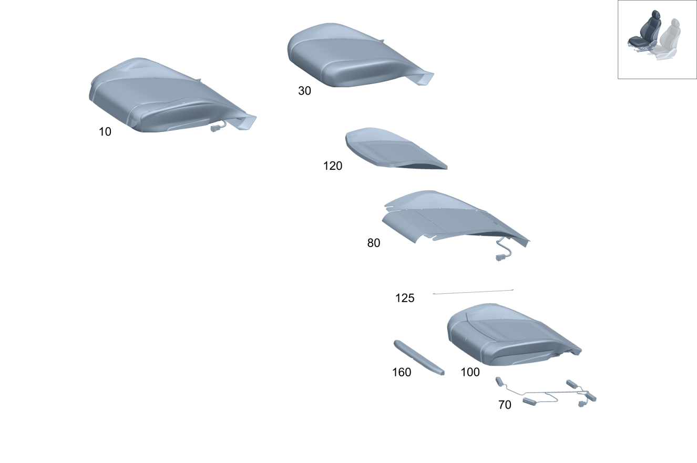

| № | Артикул | Название | Кол. | Примечание |
|---|---|---|---|---|
| 10 | A 167 910 72 09 | Подушка сиденья водителя (FAHRERKISSEN) | 1 | Подушка переднего сиденья справа |
| 10 | A 167 910 74 09 | Подушка сиденья водителя (FAHRERKISSEN) | 1 | Подушка переднего сиденья справа |
| 10 | A 167 910 76 09 | Подушка сиденья водителя (FAHRERKISSEN) | 1 | Подушка переднего сиденья справа |
| 10 | A 167 910 78 09 | Подушка сиденья водителя (FAHRERKISSEN) | 1 | Подушка переднего сиденья справа |
| 10 | A 167 910 80 09 | Подушка сиденья водителя (FAHRERKISSEN) | 1 | Подушка переднего сиденья справа |
| 10 | A 167 910 80 05 | Подушка сиденья водителя (FAHRERKISSEN) | 1 | Подушка переднего сиденья справа PREMIUM |
| 10 | A 167 910 96 08 | Подушка сиденья водителя (FAHRERKISSEN) | 1 | Подушка переднего сиденья справа PREMIUM |
| 10 | A 167 910 72 14 | Подушка сиденья водителя (FAHRERKISSEN) | 1 | Подушка переднего сиденья справа PREMIUM |
| 10 | A 167 910 88 13 | Подушка сиденья водителя (FAHRERKISSEN) | 1 | Подушка переднего сиденья справа |
| 10 | A 167 910 90 06 | Подушка сиденья водителя (FAHRERKISSEN) | 1 | Подушка переднего сиденья справа PREMIUM |
| 10 | A 167 910 98 08 | Подушка сиденья водителя (FAHRERKISSEN) | 1 | Подушка переднего сиденья справа PREMIUM |
| 10 | A 167 910 70 14 | Подушка сиденья водителя (FAHRERKISSEN) | 1 | Подушка переднего сиденья справа PREMIUM |
| 10 | A 167 910 90 13 | Подушка сиденья водителя | 1 | Подушка переднего сиденья справа |
| 10 | A 167 910 82 05 | Подушка сиденья водителя (FAHRERKISSEN) | 1 | Подушка переднего сиденья справа PREMIUM |
| 10 | A 167 910 02 09 | Подушка сиденья водителя (FAHRERKISSEN) | 1 | Подушка переднего сиденья справа PREMIUM |
| 10 | A 167 910 92 14 | Подушка сиденья водителя (FAHRERKISSEN) | 1 | Подушка переднего сиденья справа PREMIUM |
| 10 | A 167 910 20 14 | Подушка сиденья водителя (FAHRERKISSEN) | 1 | Подушка переднего сиденья справа |
| 10 | A 167 910 92 06 | Подушка сиденья водителя (FAHRERKISSEN) | 1 | Подушка переднего сиденья справа PREMIUM |
| 10 | A 167 910 04 09 | Подушка сиденья водителя (FAHRERKISSEN) | 1 | Подушка переднего сиденья справа PREMIUM |
| 10 | A 167 910 90 14 | Подушка сиденья водителя (FAHRERKISSEN) | 1 | Подушка переднего сиденья справа PREMIUM |
| 10 | A 167 910 22 14 | Подушка сиденья водителя | 1 | Подушка переднего сиденья справа |
| 10 | A 167 910 84 05 | Подушка сиденья водителя (FAHRERKISSEN) | 1 | Подушка переднего сиденья справа PREMIUM |
| 10 | A 167 910 06 09 | Подушка сиденья водителя (FAHRERKISSEN) | 1 | Подушка переднего сиденья справа PREMIUM |
| 10 | A 167 910 84 14 | Подушка сиденья водителя (FAHRERKISSEN) | 1 | Подушка переднего сиденья справа PREMIUM |
| 10 | A 167 910 92 13 | Подушка сиденья водителя (FAHRERKISSEN) | 1 | Подушка переднего сиденья справа |
| 10 | A 167 910 94 06 | Подушка сиденья водителя (FAHRERKISSEN) | 1 | Подушка переднего сиденья справа PREMIUM |
| 10 | A 167 910 08 09 | Подушка сиденья водителя (FAHRERKISSEN) | 1 | Подушка переднего сиденья справа PREMIUM |
| 10 | A 167 910 82 14 | Подушка сиденья водителя (FAHRERKISSEN) | 1 | Подушка переднего сиденья справа PREMIUM |
| 10 | A 167 910 94 13 | Подушка сиденья водителя (FAHRERKISSEN) | 1 | Подушка переднего сиденья справа |
| 10 | A 167 910 86 05 | Подушка сиденья водителя (FAHRERKISSEN) | 1 | Подушка переднего сиденья справа PREMIUM |
| 10 | A 167 910 10 09 | Подушка сиденья водителя (FAHRERKISSEN) | 1 | Подушка переднего сиденья справа PREMIUM |
| 10 | A 167 910 88 14 | Подушка сиденья водителя (FAHRERKISSEN) | 1 | Подушка переднего сиденья справа PREMIUM |
| 10 | A 167 910 24 14 | Подушка сиденья водителя (FAHRERKISSEN) | 1 | Подушка переднего сиденья справа |
| 10 | A 167 910 96 06 | Подушка сиденья водителя (FAHRERKISSEN) | 1 | Подушка переднего сиденья справа PREMIUM |
| 10 | A 167 910 12 09 | Подушка сиденья водителя (FAHRERKISSEN) | 1 | Подушка переднего сиденья справа PREMIUM |
| 10 | A 167 910 86 14 | Подушка сиденья водителя (FAHRERKISSEN) | 1 | Подушка переднего сиденья справа PREMIUM |
| 10 | A 167 910 26 14 | Подушка сиденья водителя (FAHRERKISSEN) | 1 | Подушка переднего сиденья справа |
| 10 | A 167 910 88 05 | Подушка сиденья водителя (FAHRERKISSEN) | 1 | Подушка переднего сиденья справа |
| 10 | A 167 910 22 09 | Подушка сиденья водителя (FAHRERKISSEN) | 1 | Подушка переднего сиденья справа |
| 10 | A 167 910 98 06 | Подушка сиденья водителя (FAHRERKISSEN) | 1 | Подушка переднего сиденья справа |
| 10 | A 167 910 24 09 | Подушка сиденья водителя (FAHRERKISSEN) | 1 | Подушка переднего сиденья справа |
| 10 | A 167 910 94 05 | Подушка сиденья водителя (FAHRERKISSEN) | 1 | Подушка переднего сиденья справа |
| 10 | A 167 910 26 09 | Подушка сиденья водителя (FAHRERKISSEN) | 1 | Подушка переднего сиденья справа |
| 10 | A 167 910 04 07 | FRONT SEAT CUSHION (FAHRERKISSEN) | 1 | Подушка переднего сиденья справа |
| 10 | A 167 910 74 13 | Подушка сиденья водителя | 1 | Подушка переднего сиденья справа |
| 10 | A 167 910 06 07 | Подушка сиденья водителя (FAHRERKISSEN) | 1 | Подушка переднего сиденья справа |
| 10 | A 167 910 28 09 | Подушка сиденья водителя (FAHRERKISSEN) | 1 | Подушка переднего сиденья справа |
| 10 | A 167 910 90 05 | Подушка сиденья водителя (FAHRERKISSEN) | 1 | Подушка переднего сиденья справа |
| 10 | A 167 910 30 09 | Подушка сиденья водителя (FAHRERKISSEN) | 1 | Подушка переднего сиденья справа |
| 10 | A 167 910 02 07 | Подушка сиденья водителя (FAHRERKISSEN) | 1 | Подушка переднего сиденья справа |
| 10 | A 167 910 32 09 | Подушка сиденья водителя (FAHRERKISSEN) | 1 | Подушка переднего сиденья справа |
| 10 | A 167 910 96 05 | Подушка сиденья водителя (FAHRERKISSEN) | 1 | Подушка переднего сиденья справа |
| 10 | A 167 910 34 09 | Подушка сиденья водителя (FAHRERKISSEN) | 1 | Подушка переднего сиденья справа |
| 10 | A 167 910 08 07 | Подушка сиденья водителя (FAHRERKISSEN) | 1 | Подушка переднего сиденья справа |
| 10 | A 167 910 36 09 | Подушка сиденья водителя (FAHRERKISSEN) | 1 | Подушка переднего сиденья справа |
| 10 | A 167 910 10 07 | FRONT SEAT CUSHION (FAHRERKISSEN) | 1 | Подушка переднего сиденья справа |
| 10 | A 167 910 76 13 | Подушка сиденья водителя (FAHRERKISSEN) | 1 | Подушка переднего сиденья справа |
| 10 | A 167 910 22 09 | Подушка сиденья водителя (FAHRERKISSEN) | 1 | Подушка переднего сиденья справа |
| 10 | A 167 910 24 09 | Подушка сиденья водителя (FAHRERKISSEN) | 1 | Подушка переднего сиденья справа |
| 10 | A 167 910 26 09 | Подушка сиденья водителя (FAHRERKISSEN) | 1 | Подушка переднего сиденья справа |
| 10 | A 167 910 28 09 | Подушка сиденья водителя (FAHRERKISSEN) | 1 | Подушка переднего сиденья справа |
| 10 | A 167 910 30 09 | Подушка сиденья водителя (FAHRERKISSEN) | 1 | Подушка переднего сиденья справа |
| 10 | A 167 910 32 09 | Подушка сиденья водителя (FAHRERKISSEN) | 1 | Подушка переднего сиденья справа |
| 10 | A 167 910 34 09 | Подушка сиденья водителя (FAHRERKISSEN) | 1 | Подушка переднего сиденья справа |
| 10 | A 167 910 36 09 | Подушка сиденья водителя (FAHRERKISSEN) | 1 | Подушка переднего сиденья справа |
| 10 | A 167 910 74 05 | Подушка сиденья водителя (FAHRERKISSEN) | 1 | Подушка переднего сиденья справа |
| 10 | A 167 910 88 06 | Подушка сиденья водителя (FAHRERKISSEN) | 1 | Подушка переднего сиденья справа |
| 10 | A 167 910 40 09 | Подушка сиденья водителя (FAHRERKISSEN) | 1 | Подушка переднего сиденья справа |
| 10 | A 167 910 92 05 | FRONT SEAT CUSHION (FAHRERKISSEN) | 1 | Подушка переднего сиденья справа |
| 10 | A 167 910 78 13 | Подушка сиденья водителя (FAHRERKISSEN) | 1 | Подушка переднего сиденья справа |
| 10 | A 167 910 98 05 | FRONT SEAT CUSHION (FAHRERKISSEN) | 1 | Подушка переднего сиденья справа |
| 10 | A 167 910 32 18 | Подушка сиденья водителя | 1 | Подушка переднего сиденья справа |
| 10 | A 167 910 06 06 | Подушка сиденья водителя (FAHRERKISSEN) | 1 | Подушка переднего сиденья справа |
| 10 | A 167 910 16 07 | Подушка сиденья водителя | 1 | Подушка переднего сиденья справа |
| 10 | A 167 910 10 06 | Подушка сиденья водителя (FAHRERKISSEN) | 1 | Подушка переднего сиденья справа |
| 10 | A 167 910 20 07 | Подушка сиденья водителя (FAHRERKISSEN) | 1 | Подушка переднего сиденья справа |
| 10 | A 167 910 08 06 | Подушка сиденья водителя (FAHRERKISSEN) | 1 | Подушка переднего сиденья справа |
| 10 | A 167 910 72 10 | Подушка сиденья водителя (FAHRERKISSEN) | 1 | Подушка переднего сиденья справа |
| 10 | A 167 910 28 14 | Подушка сиденья водителя (FAHRERKISSEN) | 1 | Подушка переднего сиденья справа |
| 10 | A 167 910 52 19 | Подушка сиденья водителя (FAHRERKISSEN) | 1 | Подушка переднего сиденья справа |
| 10 | A 167 910 12 06 | Подушка сиденья водителя (FAHRERKISSEN) | 1 | Подушка переднего сиденья справа |
| 10 | A 167 910 74 10 | Подушка сиденья водителя (FAHRERKISSEN) | 1 | Подушка переднего сиденья справа |
| 10 | A 167 910 30 14 | Подушка сиденья водителя | 1 | Подушка переднего сиденья справа |
| 10 | A 167 910 54 19 | Подушка сиденья водителя | 1 | Подушка переднего сиденья справа |
| 10 | A 167 910 16 06 | Подушка сиденья водителя (FAHRERKISSEN) | 1 | Подушка переднего сиденья справа |
| 10 | A 167 910 76 10 | Подушка сиденья водителя (FAHRERKISSEN) | 1 | Подушка переднего сиденья справа |
| 10 | A 167 910 32 14 | Подушка сиденья водителя (FAHRERKISSEN) | 1 | Подушка переднего сиденья справа |
| 10 | A 167 910 56 19 | Подушка сиденья водителя | 1 | Подушка переднего сиденья справа |
| 10 | A 167 910 18 07 | Подушка сиденья водителя (FAHRERKISSEN) | 1 | Подушка переднего сиденья справа |
| 10 | A 167 910 78 10 | Подушка сиденья водителя (FAHRERKISSEN) | 1 | Подушка переднего сиденья справа |
| 10 | A 167 910 34 14 | Подушка сиденья водителя | 1 | Подушка переднего сиденья справа |
| 10 | A 167 910 58 19 | Подушка сиденья водителя | 1 | Подушка переднего сиденья справа |
| 10 | A 167 910 14 06 | Подушка сиденья водителя (FAHRERKISSEN) | 1 | Подушка переднего сиденья справа |
| 10 | A 167 910 14 06 | Подушка сиденья водителя (FAHRERKISSEN) | 1 | Подушка переднего сиденья справа |
| 10 | A 167 910 50 09 | Подушка сиденья водителя (FAHRERKISSEN) | 1 | Подушка переднего сиденья справа |
| 10 | A 167 910 24 07 | Подушка сиденья водителя | 1 | Подушка переднего сиденья справа |
| 10 | A 167 910 24 07 | Подушка сиденья водителя | 1 | Подушка переднего сиденья справа |
| 10 | A 167 910 52 09 | Подушка сиденья водителя (FAHRERKISSEN) | 1 | Подушка переднего сиденья справа |
| 10 | A 167 910 22 06 | Подушка сиденья водителя (FAHRERKISSEN) | 1 | Подушка переднего сиденья справа |
| 10 | A 167 910 22 06 | Подушка сиденья водителя (FAHRERKISSEN) | 1 | Подушка переднего сиденья справа |
| 10 | A 167 910 54 09 | Подушка сиденья водителя (FAHRERKISSEN) | 1 | Подушка переднего сиденья справа |
| 10 | A 167 910 32 07 | Подушка сиденья водителя (FAHRERKISSEN) | 1 | Подушка переднего сиденья справа |
| 10 | A 167 910 32 07 | Подушка сиденья водителя (FAHRERKISSEN) | 1 | Подушка переднего сиденья справа |
| 10 | A 167 910 56 09 | Подушка сиденья водителя | 1 | Подушка переднего сиденья справа |
| 10 | A 167 910 18 06 | Подушка сиденья водителя (FAHRERKISSEN) | 1 | Подушка переднего сиденья справа |
| 10 | A 167 910 18 06 | Подушка сиденья водителя (FAHRERKISSEN) | 1 | Подушка переднего сиденья справа |
| 10 | A 167 910 58 09 | Подушка сиденья водителя (FAHRERKISSEN) | 1 | Подушка переднего сиденья справа |
| 10 | A 167 910 28 07 | Подушка сиденья водителя | 1 | Подушка переднего сиденья справа |
| 10 | A 167 910 28 07 | Подушка сиденья водителя | 1 | Подушка переднего сиденья справа |
| 10 | A 167 910 60 09 | Подушка сиденья водителя | 1 | Подушка переднего сиденья справа |
| 10 | A 167 910 84 06 | Подушка сиденья водителя (FAHRERKISSEN) | 1 | Подушка переднего сиденья справа |
| 10 | A 167 910 84 06 | Подушка сиденья водителя (FAHRERKISSEN) | 1 | Подушка переднего сиденья справа |
| 10 | A 167 910 62 09 | Подушка сиденья водителя (FAHRERKISSEN) | 1 | Подушка переднего сиденья справа |
| 10 | A 167 910 36 07 | Подушка сиденья водителя | 1 | Подушка переднего сиденья справа |
| 10 | A 167 910 36 07 | Подушка сиденья водителя | 1 | Подушка переднего сиденья справа |
| 10 | A 167 910 64 09 | Подушка сиденья водителя | 1 | Подушка переднего сиденья справа |
| 10 | A 167 910 20 06 | Подушка сиденья водителя (FAHRERKISSEN) | 1 | Подушка переднего сиденья справа |
| 10 | A 167 910 80 10 | Подушка сиденья водителя (FAHRERKISSEN) | 1 | Подушка переднего сиденья справа |
| 10 | A 167 910 22 07 | Подушка сиденья водителя (FAHRERKISSEN) | 1 | Подушка переднего сиденья справа |
| 10 | A 167 910 82 10 | Подушка сиденья водителя (FAHRERKISSEN) | 1 | Подушка переднего сиденья справа |
| 10 | A 167 910 26 07 | Подушка сиденья водителя (FAHRERKISSEN) | 1 | Подушка переднего сиденья справа |
| 10 | A 167 910 84 10 | Подушка сиденья водителя (FAHRERKISSEN) | 1 | Подушка переднего сиденья справа |
| 10 | A 167 910 30 07 | Подушка сиденья водителя (FAHRERKISSEN) | 1 | Подушка переднего сиденья справа |
| 10 | A 167 910 86 10 | Подушка сиденья водителя (FAHRERKISSEN) | 1 | Подушка переднего сиденья справа |
| 10 | A 167 910 34 07 | Подушка сиденья водителя (FAHRERKISSEN) | 1 | Подушка переднего сиденья справа |
| 10 | A 167 910 88 10 | Подушка сиденья водителя (FAHRERKISSEN) | 1 | Подушка переднего сиденья справа |
| 10 | A 167 910 38 07 | Подушка сиденья водителя (FAHRERKISSEN) | 1 | Подушка переднего сиденья справа |
| 10 | A 167 910 90 10 | Подушка сиденья водителя (FAHRERKISSEN) | 1 | Подушка переднего сиденья справа |
| 10 | A 167 910 82 06 | Подушка сиденья водителя (FAHRERKISSEN) | 1 | Подушка переднего сиденья справа |
| 10 | A 167 910 92 10 | Подушка сиденья водителя (FAHRERKISSEN) | 1 | Подушка переднего сиденья справа |
| 10 | A 167 910 86 06 | Подушка сиденья водителя (FAHRERKISSEN) | 1 | Подушка переднего сиденья справа |
| 10 | A 167 910 94 10 | Подушка сиденья водителя | 1 | Подушка переднего сиденья справа |
| 10 | A 167 910 80 10 | Подушка сиденья водителя (FAHRERKISSEN) | 1 | Подушка переднего сиденья справа |
| 10 | A 167 910 82 10 | Подушка сиденья водителя (FAHRERKISSEN) | 1 | Подушка переднего сиденья справа |
| 10 | A 167 910 84 10 | Подушка сиденья водителя (FAHRERKISSEN) | 1 | Подушка переднего сиденья справа |
| 10 | A 167 910 86 10 | Подушка сиденья водителя (FAHRERKISSEN) | 1 | Подушка переднего сиденья справа |
| 10 | A 167 910 88 10 | Подушка сиденья водителя (FAHRERKISSEN) | 1 | Подушка переднего сиденья справа |
| 10 | A 167 910 90 10 | Подушка сиденья водителя (FAHRERKISSEN) | 1 | Подушка переднего сиденья справа |
| 10 | A 167 910 92 10 | Подушка сиденья водителя (FAHRERKISSEN) | 1 | Подушка переднего сиденья справа |
| 10 | A 167 910 94 10 | Подушка сиденья водителя | 1 | Подушка переднего сиденья справа |
| 10 | A 167 910 59 10 | Подушка сиденья водителя | 1 | Подушка переднего сиденья справа |
| 10 | A 167 910 80 07 | Подушка сиденья водителя | 1 | Подушка переднего сиденья справа |
| 10 | A 167 910 18 08 | Подушка сиденья водителя | 1 | Подушка переднего сиденья справа |
| 10 | A 167 910 82 07 | Подушка сиденья водителя (FAHRERKISSEN) | 1 | Подушка переднего сиденья справа |
| 10 | A 167 910 16 08 | Подушка сиденья водителя | 1 | Подушка переднего сиденья справа |
| 10 | A 167 910 20 08 | Подушка сиденья водителя | 1 | Подушка переднего сиденья справа |
| 10 | A 167 910 66 09 | Подушка сиденья водителя (FAHRERKISSEN) | 1 | Подушка переднего сиденья справа |
| 10 | A 167 910 68 09 | Подушка сиденья водителя (FAHRERKISSEN) | 1 | Подушка переднего сиденья справа |
| 10 | A 167 910 70 09 | Подушка сиденья водителя (FAHRERKISSEN) | 1 | Подушка переднего сиденья справа |
| 10 | A 167 910 60 10 | Подушка сиденья водителя | 1 | Подушка переднего сиденья справа |
| 10 | A 167 910 61 10 | Подушка сиденья водителя | 1 | Подушка переднего сиденья справа |
| 10 | A 167 910 62 10 | Подушка сиденья водителя | 1 | Подушка переднего сиденья справа |
| 10 | A 167 910 40 14 | Подушка сиденья водителя | 1 | Подушка переднего сиденья справа |
| 10 | A 167 910 42 14 | Подушка сиденья водителя (FAHRERKISSEN) | 1 | Подушка переднего сиденья справа |
| 10 | A 167 910 44 14 | Подушка сиденья водителя (FAHRERKISSEN) | 1 | Подушка переднего сиденья справа |
| 10 | A 167 910 46 14 | Подушка сиденья водителя | 1 | Подушка переднего сиденья справа |
| 10 | A 167 910 48 14 | Подушка сиденья водителя | 1 | Подушка переднего сиденья справа |
| 10 | A 167 910 50 14 | Подушка сиденья водителя | 1 | Подушка переднего сиденья справа |
| 10 | A 167 910 84 07 | Подушка сиденья водителя (FAHRERKISSEN) | 1 | Подушка переднего сиденья справа |
| 10 | A 167 910 86 07 | Подушка сиденья водителя (FAHRERKISSEN) | 1 | Подушка переднего сиденья справа |
| 10 | A 167 910 88 07 | Подушка сиденья водителя (FAHRERKISSEN) | 1 | Подушка переднего сиденья справа |
| 10 | A 167 910 90 07 | Подушка сиденья водителя (FAHRERKISSEN) | 1 | Подушка переднего сиденья справа |
| 10 | A 167 910 94 07 | Подушка сиденья водителя (FAHRERKISSEN) | 1 | Подушка переднего сиденья справа |
| 10 | A 167 910 72 09 | Подушка сиденья водителя (FAHRERKISSEN) | 1 | Подушка переднего сиденья справа |
| 10 | A 167 910 74 09 | Подушка сиденья водителя (FAHRERKISSEN) | 1 | Подушка переднего сиденья справа |
| 10 | A 167 910 76 09 | Подушка сиденья водителя (FAHRERKISSEN) | 1 | Подушка переднего сиденья справа |
| 10 | A 167 910 78 09 | Подушка сиденья водителя (FAHRERKISSEN) | 1 | Подушка переднего сиденья справа |
| 10 | A 167 910 80 09 | Подушка сиденья водителя (FAHRERKISSEN) | 1 | Подушка переднего сиденья справа |
| 10 | A 167 910 96 07 | Подушка сиденья водителя (FAHRERKISSEN) | 1 | Подушка переднего сиденья справа |
| 10 | A 167 910 98 07 | Подушка сиденья водителя | 1 | Подушка переднего сиденья справа |
| 10 | A 167 910 02 08 | Подушка сиденья водителя (FAHRERKISSEN) | 1 | Подушка переднего сиденья справа |
| 10 | A 167 910 04 08 | Подушка сиденья водителя (FAHRERKISSEN) | 1 | Подушка переднего сиденья справа |
| 10 | A 167 910 08 08 | Подушка сиденья водителя (FAHRERKISSEN) | 1 | Подушка переднего сиденья справа |
| 10 | A 167 910 82 09 | Подушка сиденья водителя (FAHRERKISSEN) | 1 | Подушка переднего сиденья справа |
| 10 | A 167 910 84 09 | Подушка сиденья водителя (FAHRERKISSEN) | 1 | Подушка переднего сиденья справа |
| 10 | A 167 910 86 09 | Подушка сиденья водителя (FAHRERKISSEN) | 1 | Подушка переднего сиденья справа |
| 10 | A 167 910 88 09 | Подушка сиденья водителя (FAHRERKISSEN) | 1 | Подушка переднего сиденья справа |
| 10 | A 167 910 90 09 | Подушка сиденья водителя (FAHRERKISSEN) | 1 | Подушка переднего сиденья справа |
| 30 | A 167 910 42 07 | Обивка подушки сиденья (BEZUG FAHRERKISSEN) | 1 | Обивка подушки переднего сиденья справа |
| 30 | A 167 910 42 07 | Обивка подушки сиденья (BEZUG FAHRERKISSEN) | 1 | Обивка подушки переднего сиденья справа |
| 30 | A 167 910 12 00 | Обивка подушки сиденья (BEZUG FAHRERKISSEN) | 1 | Обивка подушки переднего сиденья справа |
| 30 | A 167 910 12 00 | Обивка подушки сиденья (BEZUG FAHRERKISSEN) | 1 | Обивка подушки переднего сиденья справа |
| 30 | A 167 910 22 04 | Обивка подушки сиденья (BEZUG FAHRERKISSEN) | 1 | Обивка подушки переднего сиденья справа |
| 30 | A 167 910 22 04 | Обивка подушки сиденья (BEZUG FAHRERKISSEN) | 1 | Обивка подушки переднего сиденья справа |
| 30 | A 167 910 36 01 | Обивка подушки сиденья (BEZUG FAHRERKISSEN) | 1 | Обивка подушки переднего сиденья справа |
| 30 | A 167 910 36 01 | Обивка подушки сиденья (BEZUG FAHRERKISSEN) | 1 | Обивка подушки переднего сиденья справа |
| 30 | A 167 910 24 04 | Обивка подушки сиденья (BEZUG FAHRERKISSEN) | 1 | Обивка подушки переднего сиденья справа |
| 30 | A 167 910 24 04 | Обивка подушки сиденья (BEZUG FAHRERKISSEN) | 1 | Обивка подушки переднего сиденья справа |
| 30 | A 167 910 52 18 | Обивка подушки сиденья | 1 | Обивка подушки переднего сиденья справа |
| 30 | A 167 910 52 18 | Обивка подушки сиденья | 1 | Обивка подушки переднего сиденья справа |
| 30 | A 167 910 54 18 | Обивка подушки сиденья | 1 | Обивка подушки переднего сиденья справа |
| 30 | A 167 910 54 18 | Обивка подушки сиденья | 1 | Обивка подушки переднего сиденья справа |
| 30 | A 167 910 56 18 | Обивка подушки сиденья | 1 | Обивка подушки переднего сиденья справа |
| 30 | A 167 910 56 18 | Обивка подушки сиденья | 1 | Обивка подушки переднего сиденья справа |
| 30 | A 167 910 58 18 | Обивка подушки сиденья | 1 | Обивка подушки переднего сиденья справа |
| 30 | A 167 910 58 18 | Обивка подушки сиденья | 1 | Обивка подушки переднего сиденья справа |
| 30 | A 167 910 12 00 | Обивка подушки сиденья (BEZUG FAHRERKISSEN) | 1 | Обивка подушки переднего сиденья справа |
| 30 | A 167 910 12 00 | Обивка подушки сиденья (BEZUG FAHRERKISSEN) | 1 | Обивка подушки переднего сиденья справа |
| 30 | A 167 910 22 04 | Обивка подушки сиденья (BEZUG FAHRERKISSEN) | 1 | Обивка подушки переднего сиденья справа |
| 30 | A 167 910 22 04 | Обивка подушки сиденья (BEZUG FAHRERKISSEN) | 1 | Обивка подушки переднего сиденья справа |
| 30 | A 167 910 36 01 | Обивка подушки сиденья (BEZUG FAHRERKISSEN) | 1 | Обивка подушки переднего сиденья справа |
| 30 | A 167 910 36 01 | Обивка подушки сиденья (BEZUG FAHRERKISSEN) | 1 | Обивка подушки переднего сиденья справа |
| 30 | A 167 910 24 04 | Обивка подушки сиденья (BEZUG FAHRERKISSEN) | 1 | Обивка подушки переднего сиденья справа |
| 30 | A 167 910 24 04 | Обивка подушки сиденья (BEZUG FAHRERKISSEN) | 1 | Обивка подушки переднего сиденья справа |
| 30 | A 167 910 40 01 | Обивка подушки сиденья (BEZUG FAHRERKISSEN) | 1 | Обивка подушки переднего сиденья справа |
| 30 | A 167 910 40 01 | Обивка подушки сиденья (BEZUG FAHRERKISSEN) | 1 | Обивка подушки переднего сиденья справа |
| 30 | A 167 910 14 00 | Обивка подушки сиденья (BEZUG FAHRERKISSEN) | 1 | Обивка подушки переднего сиденья справа |
| 30 | A 167 910 14 00 | Обивка подушки сиденья (BEZUG FAHRERKISSEN) | 1 | Обивка подушки переднего сиденья справа |
| 30 | A 167 910 96 04 | Обивка подушки сиденья (BEZUG FAHRERKISSEN) | 1 | Обивка подушки переднего сиденья справа |
| 30 | A 167 910 96 04 | Обивка подушки сиденья (BEZUG FAHRERKISSEN) | 1 | Обивка подушки переднего сиденья справа |
| 30 | A 167 910 12 14 | Обивка подушки сиденья (BEZUG FAHRERKISSEN) | 1 | Обивка подушки переднего сиденья справа |
| 30 | A 167 910 12 14 | Обивка подушки сиденья (BEZUG FAHRERKISSEN) | 1 | Обивка подушки переднего сиденья справа |
| 30 | A 167 910 12 14 | Обивка подушки сиденья (BEZUG FAHRERKISSEN) | 1 | Обивка подушки переднего сиденья справа |
| 30 | A 167 910 12 14 | Обивка подушки сиденья (BEZUG FAHRERKISSEN) | 1 | Обивка подушки переднего сиденья справа |
| 30 | A 167 910 95 17 | Обивка подушки сиденья | 1 | Обивка подушки переднего сиденья справа |
| 30 | A 167 910 95 17 | Обивка подушки сиденья | 1 | Обивка подушки переднего сиденья справа |
| 30 | A 167 910 98 04 | Обивка подушки сиденья (BEZUG FAHRERKISSEN) | 1 | Обивка подушки переднего сиденья справа |
| 30 | A 167 910 14 14 | Обивка подушки сиденья (BEZUG FAHRERKISSEN) | 1 | Обивка подушки переднего сиденья справа |
| 30 | A 167 910 14 14 | Обивка подушки сиденья (BEZUG FAHRERKISSEN) | 1 | Обивка подушки переднего сиденья справа |
| 30 | A 167 910 00 17 | Обивка подушки сиденья | 1 | Обивка подушки переднего сиденья справа |
| 30 | A 167 910 98 04 | Обивка подушки сиденья (BEZUG FAHRERKISSEN) | 1 | Обивка подушки переднего сиденья справа |
| 30 | A 167 910 00 17 | Обивка подушки сиденья | 1 | Обивка подушки переднего сиденья справа |
| 30 | A 167 910 14 14 | Обивка подушки сиденья (BEZUG FAHRERKISSEN) | 1 | Обивка подушки переднего сиденья справа |
| 30 | A 167 910 14 14 | Обивка подушки сиденья (BEZUG FAHRERKISSEN) | 1 | Обивка подушки переднего сиденья справа |
| 30 | A 167 910 00 17 | Обивка подушки сиденья | 1 | Обивка подушки переднего сиденья справа |
| 30 | A 167 910 00 17 | Обивка подушки сиденья | 1 | Обивка подушки переднего сиденья справа |
| 30 | A 167 910 26 04 | Обивка подушки сиденья (BEZUG FAHRERKISSEN) | 1 | Обивка подушки переднего сиденья справа |
| 30 | A 167 910 26 04 | Обивка подушки сиденья (BEZUG FAHRERKISSEN) | 1 | Обивка подушки переднего сиденья справа |
| 30 | A 167 910 30 04 | Обивка подушки сиденья (BEZUG FAHRERKISSEN) | 1 | Обивка подушки переднего сиденья справа |
| 30 | A 167 910 30 04 | Обивка подушки сиденья (BEZUG FAHRERKISSEN) | 1 | Обивка подушки переднего сиденья справа |
| 30 | A 167 910 02 05 | Обивка подушки сиденья (BEZUG FAHRERKISSEN) | 1 | Обивка подушки переднего сиденья справа |
| 30 | A 167 910 68 18 | Обивка подушки сиденья | 1 | Обивка подушки переднего сиденья справа |
| 30 | A 167 910 02 05 | Обивка подушки сиденья (BEZUG FAHRERKISSEN) | 1 | Обивка подушки переднего сиденья справа |
| 30 | A 167 910 68 18 | Обивка подушки сиденья | 1 | Обивка подушки переднего сиденья справа |
| 30 | A 167 910 06 05 | Обивка подушки сиденья (BEZUG FAHRERKISSEN) | 1 | Обивка подушки переднего сиденья справа |
| 30 | A 167 910 72 18 | Обивка подушки сиденья | 1 | Обивка подушки переднего сиденья справа |
| 30 | A 167 910 06 05 | Обивка подушки сиденья (BEZUG FAHRERKISSEN) | 1 | Обивка подушки переднего сиденья справа |
| 30 | A 167 910 72 18 | Обивка подушки сиденья | 1 | Обивка подушки переднего сиденья справа |
| 30 | A 167 910 04 05 | Обивка подушки сиденья | 1 | Обивка подушки переднего сиденья справа |
| 30 | A 167 910 70 18 | Обивка подушки сиденья | 1 | Обивка подушки переднего сиденья справа |
| 30 | A 167 910 04 05 | Обивка подушки сиденья | 1 | Обивка подушки переднего сиденья справа |
| 30 | A 167 910 70 18 | Обивка подушки сиденья | 1 | Обивка подушки переднего сиденья справа |
| 30 | A 167 910 08 05 | Обивка подушки сиденья (BEZUG FAHRERKISSEN) | 1 | Обивка подушки переднего сиденья справа |
| 30 | A 167 910 74 18 | Обивка подушки сиденья | 1 | Обивка подушки переднего сиденья справа |
| 30 | A 167 910 08 05 | Обивка подушки сиденья (BEZUG FAHRERKISSEN) | 1 | Обивка подушки переднего сиденья справа |
| 30 | A 167 910 74 18 | Обивка подушки сиденья | 1 | Обивка подушки переднего сиденья справа |
| 30 | A 167 910 02 05 | Обивка подушки сиденья (BEZUG FAHRERKISSEN) | 1 | Обивка подушки переднего сиденья справа |
| 30 | A 167 910 02 05 | Обивка подушки сиденья (BEZUG FAHRERKISSEN) | 1 | Обивка подушки переднего сиденья справа |
| 30 | A 167 910 06 05 | Обивка подушки сиденья (BEZUG FAHRERKISSEN) | 1 | Обивка подушки переднего сиденья справа |
| 30 | A 167 910 06 05 | Обивка подушки сиденья (BEZUG FAHRERKISSEN) | 1 | Обивка подушки переднего сиденья справа |
| 30 | A 167 910 04 05 | Обивка подушки сиденья | 1 | Обивка подушки переднего сиденья справа |
| 30 | A 167 910 04 05 | Обивка подушки сиденья | 1 | Обивка подушки переднего сиденья справа |
| 30 | A 167 910 08 05 | Обивка подушки сиденья (BEZUG FAHRERKISSEN) | 1 | Обивка подушки переднего сиденья справа |
| 30 | A 167 910 08 05 | Обивка подушки сиденья (BEZUG FAHRERKISSEN) | 1 | Обивка подушки переднего сиденья справа |
| 30 | A 167 910 16 00 | Обивка подушки сиденья (BEZUG FAHRERKISSEN) | 1 | Обивка подушки переднего сиденья справа |
| 30 | A 167 910 80 18 | Обивка подушки сиденья | 1 | Обивка подушки переднего сиденья справа |
| 30 | A 167 910 16 00 | Обивка подушки сиденья (BEZUG FAHRERKISSEN) | 1 | Обивка подушки переднего сиденья справа |
| 30 | A 167 910 80 18 | Обивка подушки сиденья | 1 | Обивка подушки переднего сиденья справа |
| 30 | A 167 910 42 05 | Обивка подушки сиденья (BEZUG FAHRERKISSEN) | 1 | Обивка подушки переднего сиденья справа |
| 30 | A 167 910 42 05 | Обивка подушки сиденья (BEZUG FAHRERKISSEN) | 1 | Обивка подушки переднего сиденья справа |
| 30 | A 167 910 44 18 | Обивка подушки сиденья | 1 | Обивка подушки переднего сиденья справа |
| 30 | A 167 910 44 18 | Обивка подушки сиденья | 1 | Обивка подушки переднего сиденья справа |
| 30 | A 167 910 66 06 | Обивка подушки сиденья (BEZUG FAHRERKISSEN) | 1 | Обивка подушки переднего сиденья справа |
| 30 | A 167 910 66 06 | Обивка подушки сиденья (BEZUG FAHRERKISSEN) | 1 | Обивка подушки переднего сиденья справа |
| 30 | A 167 910 46 18 | Обивка подушки сиденья | 1 | Обивка подушки переднего сиденья справа |
| 30 | A 167 910 46 18 | Обивка подушки сиденья | 1 | Обивка подушки переднего сиденья справа |
| 30 | A 167 910 46 18 | Обивка подушки сиденья | 1 | Обивка подушки переднего сиденья справа |
| 30 | A 167 910 68 06 | Обивка подушки сиденья (BEZUG FAHRERKISSEN) | 1 | Обивка подушки переднего сиденья справа |
| 30 | A 167 910 68 06 | Обивка подушки сиденья (BEZUG FAHRERKISSEN) | 1 | Обивка подушки переднего сиденья справа |
| 30 | A 167 910 48 08 | Обивка подушки сиденья (BEZUG FAHRERKISSEN) | 1 | Обивка подушки переднего сиденья справа |
| 30 | A 167 910 48 08 | Обивка подушки сиденья (BEZUG FAHRERKISSEN) | 1 | Обивка подушки переднего сиденья справа |
| 30 | A 167 910 52 14 | Обивка подушки сиденья | 1 | Обивка подушки переднего сиденья справа |
| 30 | A 167 910 52 14 | Обивка подушки сиденья | 1 | Обивка подушки переднего сиденья справа |
| 30 | A 167 910 54 14 | Обивка подушки сиденья | 1 | Обивка подушки переднего сиденья справа |
| 30 | A 167 910 54 14 | Обивка подушки сиденья | 1 | Обивка подушки переднего сиденья справа |
| 30 | A 167 910 68 19 | Обивка подушки сиденья | 1 | Обивка подушки переднего сиденья справа |
| 30 | A 167 910 68 19 | Обивка подушки сиденья | 1 | Обивка подушки переднего сиденья справа |
| 30 | A 167 910 44 18 | Обивка подушки сиденья | 1 | Обивка подушки переднего сиденья справа |
| 30 | A 167 910 44 18 | Обивка подушки сиденья | 1 | Обивка подушки переднего сиденья справа |
| 30 | A 167 910 46 18 | Обивка подушки сиденья | 1 | Обивка подушки переднего сиденья справа |
| 30 | A 167 910 46 18 | Обивка подушки сиденья | 1 | Обивка подушки переднего сиденья справа |
| 30 | A 167 910 68 19 | Обивка подушки сиденья | 1 | Обивка подушки переднего сиденья справа |
| 30 | A 167 910 68 19 | Обивка подушки сиденья | 1 | Обивка подушки переднего сиденья справа |
| 30 | A 167 910 02 15 | Обивка подушки сиденья (BEZUG FAHRERKISSEN) | 1 | Обивка подушки переднего сиденья справа PREMIUM |
| 30 | A 167 910 80 13 | Обивка подушки сиденья (BEZUG FAHRERKISSEN) | 1 | Обивка подушки переднего сиденья справа PREMIUM |
| 30 | A 167 910 02 15 | Обивка подушки сиденья (BEZUG FAHRERKISSEN) | 1 | Обивка подушки переднего сиденья справа PREMIUM |
| 30 | A 167 910 80 13 | Обивка подушки сиденья (BEZUG FAHRERKISSEN) | 1 | Обивка подушки переднего сиденья справа PREMIUM |
| 30 | A 167 910 94 14 | Обивка подушки сиденья (BEZUG FAHRERKISSEN) | 1 | Обивка подушки переднего сиденья справа PREMIUM |
| 30 | A 167 910 16 14 | Обивка подушки сиденья (BEZUG FAHRERKISSEN) | 1 | Обивка подушки переднего сиденья справа PREMIUM |
| 30 | A 167 910 94 14 | Обивка подушки сиденья (BEZUG FAHRERKISSEN) | 1 | Обивка подушки переднего сиденья справа PREMIUM |
| 30 | A 167 910 16 14 | Обивка подушки сиденья (BEZUG FAHRERKISSEN) | 1 | Обивка подушки переднего сиденья справа PREMIUM |
| 30 | A 167 910 98 14 | Обивка подушки сиденья (BEZUG FAHRERKISSEN) | 1 | Обивка подушки переднего сиденья справа PREMIUM |
| 30 | A 167 910 82 13 | Обивка подушки сиденья (BEZUG FAHRERKISSEN) | 1 | Обивка подушки переднего сиденья справа PREMIUM |
| 30 | A 167 910 98 14 | Обивка подушки сиденья (BEZUG FAHRERKISSEN) | 1 | Обивка подушки переднего сиденья справа PREMIUM |
| 30 | A 167 910 82 13 | Обивка подушки сиденья (BEZUG FAHRERKISSEN) | 1 | Обивка подушки переднего сиденья справа PREMIUM |
| 30 | A 167 910 96 14 | Обивка подушки сиденья (BEZUG FAHRERKISSEN) | 1 | Обивка подушки переднего сиденья справа PREMIUM |
| 30 | A 167 910 18 14 | Обивка подушки сиденья (BEZUG FAHRERKISSEN) | 1 | Обивка подушки переднего сиденья справа PREMIUM |
| 30 | A 167 910 96 14 | Обивка подушки сиденья (BEZUG FAHRERKISSEN) | 1 | Обивка подушки переднего сиденья справа PREMIUM |
| 30 | A 167 910 18 14 | Обивка подушки сиденья (BEZUG FAHRERKISSEN) | 1 | Обивка подушки переднего сиденья справа PREMIUM |
| 70 | A 223 906 59 01 | Вибродвигатель (VIBRATIONSMOTOR) | 1 | |
| 70 | A 223 906 59 01 | Вибродвигатель (VIBRATIONSMOTOR) | 1 | |
| 80 | A 167 906 48 06 | Подогрев сидений (SITZHEIZUNG) | 1 | Подушка с подогревом \- переднее сиденье справа |
| 80 | A 167 906 34 12 | Подогрев сидений (SITZHEIZUNG) | 1 | Подушка с подогревом \- переднее сиденье справа |
| 80 | A 167 906 48 06 | Подогрев сидений (SITZHEIZUNG) | 1 | Подушка с подогревом \- переднее сиденье справа |
| 80 | A 167 906 34 12 | Подогрев сидений (SITZHEIZUNG) | 1 | Подушка с подогревом \- переднее сиденье справа |
| 80 | A 167 906 50 06 | Подогрев сидений (SITZHEIZUNG) | 1 | Подушка с подогревом \- переднее сиденье справа |
| 80 | A 167 906 36 12 | Подогрев сидений (SITZHEIZUNG) | 1 | Подушка с подогревом \- переднее сиденье справа |
| 80 | A 167 906 50 06 | Подогрев сидений (SITZHEIZUNG) | 1 | Подушка с подогревом \- переднее сиденье справа |
| 80 | A 167 906 36 12 | Подогрев сидений (SITZHEIZUNG) | 1 | Подушка с подогревом \- переднее сиденье справа |
| 80 | A 167 906 42 00 | Подогрев сидений (SITZHEIZUNG) | 1 | Подушка с подогревом \- переднее сиденье справа |
| 80 | A 167 906 46 00 | Подогрев сидений (SITZHEIZUNG) | 1 | Подушка с подогревом \- переднее сиденье справа |
| 80 | A 167 906 42 00 | Подогрев сидений (SITZHEIZUNG) | 1 | Подушка с подогревом \- переднее сиденье справа |
| 80 | A 167 906 46 00 | Подогрев сидений (SITZHEIZUNG) | 1 | Подушка с подогревом \- переднее сиденье справа |
| 80 | A 167 906 58 00 | Подогрев сидений (SITZHEIZUNG) | 1 | Подушка с подогревом \- переднее сиденье справа |
| 80 | A 167 906 58 00 | Подогрев сидений (SITZHEIZUNG) | 1 | Подушка с подогревом \- переднее сиденье справа |
| 80 | A 167 906 62 00 | Подогрев сидений (SITZHEIZUNG) | 1 | Подушка с подогревом \- переднее сиденье справа |
| 80 | A 167 906 62 00 | Подогрев сидений (SITZHEIZUNG) | 1 | Подушка с подогревом \- переднее сиденье справа |
| 80 | A 167 906 58 00 | Подогрев сидений (SITZHEIZUNG) | 1 | Подушка с подогревом \- переднее сиденье справа |
| 80 | A 167 906 58 00 | Подогрев сидений (SITZHEIZUNG) | 1 | Подушка с подогревом \- переднее сиденье справа |
| 80 | A 167 906 62 00 | Подогрев сидений (SITZHEIZUNG) | 1 | Подушка с подогревом \- переднее сиденье справа |
| 80 | A 167 906 62 00 | Подогрев сидений (SITZHEIZUNG) | 1 | Подушка с подогревом \- переднее сиденье справа |
| 80 | A 167 906 10 11 | Подогрев сидений (SITZHEIZUNG) | 1 | Подушка с подогревом \- переднее сиденье справа |
| 80 | A 167 906 10 11 | Подогрев сидений (SITZHEIZUNG) | 1 | Подушка с подогревом \- переднее сиденье справа |
| 80 | A 167 906 12 11 | Подогрев сидений (SITZHEIZUNG) | 1 | Подушка с подогревом \- переднее сиденье справа |
| 80 | A 167 906 12 11 | Подогрев сидений (SITZHEIZUNG) | 1 | Подушка с подогревом \- переднее сиденье справа |
| 100 | A 167 910 38 06 | Подкладка подушки сиденья | 1 | Мягкая подкладка подушки переднего сиденья справа |
| 100 | A 167 910 38 06 | Подкладка подушки сиденья | 1 | Мягкая подкладка подушки переднего сиденья справа |
| 100 | A 167 910 40 06 | Подкладка подушки сиденья | 1 | Мягкая подкладка подушки переднего сиденья справа |
| 100 | A 167 910 54 06 | Подкладка подушки сиденья (AUFLAGE FAHRERKISSEN) | 1 | Мягкая подкладка подушки переднего сиденья справа |
| 100 | A 167 910 54 06 | Подкладка подушки сиденья (AUFLAGE FAHRERKISSEN) | 1 | Мягкая подкладка подушки переднего сиденья справа |
| 100 | A 167 910 36 06 | Подкладка подушки сиденья (AUFLAGE FAHRERKISSEN) | 1 | Мягкая подкладка подушки переднего сиденья справа |
| 100 | A 167 910 36 06 | Подкладка подушки сиденья (AUFLAGE FAHRERKISSEN) | 1 | Мягкая подкладка подушки переднего сиденья справа |
| 100 | A 167 910 48 06 | Подкладка подушки сиденья (AUFLAGE FAHRERKISSEN) | 1 | Мягкая подкладка подушки переднего сиденья справа |
| 100 | A 167 910 48 06 | Подкладка подушки сиденья (AUFLAGE FAHRERKISSEN) | 1 | Мягкая подкладка подушки переднего сиденья справа |
| 100 | A 167 910 34 06 | Подкладка подушки сиденья | 1 | Мягкая подкладка подушки переднего сиденья справа |
| 100 | A 167 910 34 06 | Подкладка подушки сиденья | 1 | Мягкая подкладка подушки переднего сиденья справа |
| 100 | A 167 910 46 06 | Подкладка подушки сиденья (AUFLAGE FAHRERKISSEN) | 1 | Мягкая подкладка подушки переднего сиденья справа |
| 100 | A 167 910 46 06 | Подкладка подушки сиденья (AUFLAGE FAHRERKISSEN) | 1 | Мягкая подкладка подушки переднего сиденья справа |
| 100 | A 167 910 50 06 | Подкладка подушки сиденья (AUFLAGE FAHRERKISSEN) | 1 | Мягкая подкладка подушки переднего сиденья справа |
| 100 | A 167 910 50 06 | Подкладка подушки сиденья (AUFLAGE FAHRERKISSEN) | 1 | Мягкая подкладка подушки переднего сиденья справа |
| 100 | A 167 910 56 06 | Подкладка подушки сиденья (AUFLAGE FAHRERKISSEN) | 1 | Мягкая подкладка подушки переднего сиденья справа |
| 100 | A 167 910 56 06 | Подкладка подушки сиденья (AUFLAGE FAHRERKISSEN) | 1 | Мягкая подкладка подушки переднего сиденья справа |
| 100 | A 167 910 52 06 | Подкладка подушки сиденья (AUFLAGE FAHRERKISSEN) | 1 | Мягкая подкладка подушки переднего сиденья справа |
| 100 | A 167 910 52 06 | Подкладка подушки сиденья (AUFLAGE FAHRERKISSEN) | 1 | Мягкая подкладка подушки переднего сиденья справа |
| 100 | A 167 910 10 08 | Подкладка подушки сиденья (AUFLAGE FAHRERKISSEN) | 1 | Мягкая подкладка подушки переднего сиденья справа |
| 100 | A 167 910 10 08 | Подкладка подушки сиденья (AUFLAGE FAHRERKISSEN) | 1 | Мягкая подкладка подушки переднего сиденья справа |
| 100 | A 167 910 08 17 | Подкладка подушки сиденья | 1 | Мягкая подкладка подушки переднего сиденья справа |
| 100 | A 167 910 54 06 | Подкладка подушки сиденья (AUFLAGE FAHRERKISSEN) | 1 | Мягкая подкладка подушки переднего сиденья справа |
| 100 | A 167 910 48 06 | Подкладка подушки сиденья (AUFLAGE FAHRERKISSEN) | 1 | Мягкая подкладка подушки переднего сиденья справа |
| 100 | A 167 910 50 06 | Подкладка подушки сиденья (AUFLAGE FAHRERKISSEN) | 1 | Мягкая подкладка подушки переднего сиденья справа |
| 100 | A 167 910 56 06 | Подкладка подушки сиденья (AUFLAGE FAHRERKISSEN) | 1 | Мягкая подкладка подушки переднего сиденья справа |
| 100 | A 167 910 94 15 | Подкладка подушки сиденья | 1 | Мягкая подкладка подушки переднего сиденья справа |
| 100 | A 167 910 96 15 | Подкладка подушки сиденья (AUFLAGE FAHRERKISSEN) | 1 | Мягкая подкладка подушки переднего сиденья справа |
| 100 | A 167 910 98 15 | Подкладка подушки сиденья (AUFLAGE FAHRERKISSEN) | 1 | Мягкая подкладка подушки переднего сиденья справа |
| 100 | A 167 910 02 16 | Подкладка подушки сиденья (AUFLAGE FAHRERKISSEN) | 1 | Мягкая подкладка подушки переднего сиденья справа |
| 100 | A 167 910 96 15 | Подкладка подушки сиденья (AUFLAGE FAHRERKISSEN) | 1 | Мягкая подкладка подушки переднего сиденья справа |
| 100 | A 167 910 98 15 | Подкладка подушки сиденья (AUFLAGE FAHRERKISSEN) | 1 | Мягкая подкладка подушки переднего сиденья справа |
| 120 | A 167 914 07 00 | - Накидка водит. сиденья (ZUSATZAUFLAGE FHR.KISSEN) | 1 | Подушка сиденья справа |
| 120 | A 167 914 07 00 | - Накидка водит. сиденья (ZUSATZAUFLAGE FHR.KISSEN) | 1 | Подушка сиденья справа |
| 120 | A 167 914 09 00 | - Накидка водит. сиденья (ZUSATZAUFLAGE FHR.KISSEN) | 1 | Подушка сиденья справа |
| 120 | A 167 914 09 00 | - Накидка водит. сиденья (ZUSATZAUFLAGE FHR.KISSEN) | 1 | Подушка сиденья справа |
| 120 | A 167 914 09 00 | - Накидка водит. сиденья (ZUSATZAUFLAGE FHR.KISSEN) | 1 | Подушка сиденья справа |
| 120 | A 167 914 09 00 | - Накидка водит. сиденья (ZUSATZAUFLAGE FHR.KISSEN) | 1 | Подушка сиденья справа |
| 120 | A 167 914 11 00 | - Накидка водит. сиденья (ZUSATZAUFLAGE FHR.KISSEN) | 1 | Подушка сиденья справа |
| 120 | A 167 914 11 00 | - Накидка водит. сиденья (ZUSATZAUFLAGE FHR.KISSEN) | 1 | Подушка сиденья справа |
| 120 | A 167 914 13 00 | - Накидка водит. сиденья | 1 | Подушка сиденья справа |
| 120 | A 167 914 13 00 | - Накидка водит. сиденья | 1 | Подушка сиденья справа |
| 120 | A 167 914 14 00 | - Накидка водит. сиденья | 1 | Подушка сиденья справа |
| 120 | A 167 914 14 00 | - Накидка водит. сиденья | 1 | Подушка сиденья справа |
| 120 | A 167 914 13 00 | - Накидка водит. сиденья | 1 | Подушка сиденья справа |
| 120 | A 167 914 13 00 | - Накидка водит. сиденья | 1 | Подушка сиденья справа |
| 120 | A 167 914 14 00 | - Накидка водит. сиденья | 1 | Подушка сиденья справа |
| 120 | A 167 914 14 00 | - Накидка водит. сиденья | 1 | Подушка сиденья справа |
| 120 | A 167 914 14 00 | - Накидка водит. сиденья | 1 | Подушка сиденья справа |
| 120 | A 167 914 14 00 | - Накидка водит. сиденья | 1 | Подушка сиденья справа |
| 125 | A 126 924 27 29 | Скоба (BUEGEL) | 2 | КРЕПЛ.ПОДУШКИ СИДЕНЬЯ; 460MM |
| 125 | A 126 924 27 29 | Скоба (BUEGEL) | 2 | КРЕПЛ.ПОДУШКИ СИДЕНЬЯ; 460MM |
| 160 | A 167 910 96 03 | Набивка подушки сиденья (SITZKISSENPOLSTER) | 1 | Правое сиденье |
| 160 | A 167 910 96 03 | Набивка подушки сиденья (SITZKISSENPOLSTER) | 1 | Правое сиденье |
| 160 | A 167 910 96 03 | Набивка подушки сиденья (SITZKISSENPOLSTER) | 1 | Правое сиденье |
| 300 | A 167 910 40 07 | Обивка спинки сиденья (BEZUG FAHRERLEHNE) | 1 | Обивка спинки переднего сиденья справа |
| 300 | A 167 910 92 09 | Обивка спинки сиденья (BEZUG FAHRERLEHNE) | 1 | Обивка спинки переднего сиденья справа |
| 300 | A 167 910 50 03 | Обивка спинки сиденья (BEZUG FAHRERLEHNE) | 1 | Обивка спинки переднего сиденья справа |
| 300 | A 167 910 94 09 | Обивка спинки сиденья (BEZUG FAHRERLEHNE) | 1 | Обивка спинки переднего сиденья справа |
| 300 | A 167 910 52 03 | Обивка спинки сиденья (BEZUG FAHRERLEHNE) | 1 | Обивка спинки переднего сиденья справа |
| 300 | A 167 910 98 09 | Обивка спинки сиденья (BEZUG FAHRERLEHNE) | 1 | Обивка спинки переднего сиденья справа |
| 300 | A 167 910 29 16 | Обивка спинки сиденья | 1 | Обивка спинки переднего сиденья справа |
| 300 | A 167 910 16 16 | Обивка спинки сиденья | 1 | Обивка спинки переднего сиденья справа |
| 300 | A 167 910 54 03 | Обивка спинки сиденья (BEZUG FAHRERLEHNE) | 1 | Обивка спинки переднего сиденья справа |
| 300 | A 167 910 04 10 | Обивка спинки сиденья (BEZUG FAHRERLEHNE) | 1 | Обивка спинки переднего сиденья справа |
| 300 | A 167 910 12 11 | Обивка спинки сиденья (BEZUG FAHRERLEHNE) | 1 | Обивка спинки переднего сиденья справа |
| 300 | A 167 910 12 11 | Обивка спинки сиденья (BEZUG FAHRERLEHNE) | 1 | Обивка спинки переднего сиденья справа |
| 300 | A 167 910 18 16 | Обивка спинки сиденья | 1 | Обивка спинки переднего сиденья справа |
| 300 | A 167 910 06 04 | Обивка спинки сиденья (BEZUG FAHRERLEHNE) | 1 | Обивка спинки переднего сиденья справа |
| 300 | A 167 910 06 10 | Обивка спинки сиденья (BEZUG FAHRERLEHNE) | 1 | Обивка спинки переднего сиденья справа |
| 300 | A 167 910 14 11 | Обивка спинки сиденья (BEZUG FAHRERLEHNE) | 1 | Обивка спинки переднего сиденья справа |
| 300 | A 167 910 14 11 | Обивка спинки сиденья (BEZUG FAHRERLEHNE) | 1 | Обивка спинки переднего сиденья справа |
| 300 | A 167 910 19 16 | Обивка спинки сиденья | 1 | Обивка спинки переднего сиденья справа |
| 300 | A 167 910 56 03 | Обивка спинки сиденья (BEZUG FAHRERLEHNE) | 1 | Обивка спинки переднего сиденья справа |
| 300 | A 167 910 08 10 | Обивка спинки сиденья (BEZUG FAHRERLEHNE) | 1 | Обивка спинки переднего сиденья справа |
| 300 | A 167 910 16 11 | Обивка спинки сиденья (BEZUG FAHRERLEHNE) | 1 | Обивка спинки переднего сиденья справа |
| 300 | A 167 910 20 11 | Обивка спинки сиденья (BEZUG FAHRERLEHNE) | 1 | Обивка спинки переднего сиденья справа |
| 300 | A 167 910 20 16 | Обивка спинки сиденья | 1 | Обивка спинки переднего сиденья справа |
| 300 | A 167 910 08 04 | Обивка спинки сиденья (BEZUG FAHRERLEHNE) | 1 | Обивка спинки переднего сиденья справа |
| 300 | A 167 910 10 10 | Обивка спинки сиденья (BEZUG FAHRERLEHNE) | 1 | Обивка спинки переднего сиденья справа |
| 300 | A 167 910 18 11 | Обивка спинки сиденья (BEZUG FAHRERLEHNE) | 1 | Обивка спинки переднего сиденья справа |
| 300 | A 167 910 22 11 | Обивка спинки сиденья (BEZUG FAHRERLEHNE) | 1 | Обивка спинки переднего сиденья справа |
| 300 | A 167 910 21 16 | Обивка спинки сиденья | 1 | Обивка спинки переднего сиденья справа |
| 300 | A 167 910 58 03 | Обивка спинки сиденья (BEZUG FAHRERLEHNE) | 1 | Обивка спинки переднего сиденья справа |
| 300 | A 167 910 12 10 | Обивка спинки сиденья (BEZUG FAHRERLEHNE) | 1 | Обивка спинки переднего сиденья справа |
| 300 | A 167 910 20 11 | Обивка спинки сиденья (BEZUG FAHRERLEHNE) | 1 | Обивка спинки переднего сиденья справа |
| 300 | A 167 910 20 11 | Обивка спинки сиденья (BEZUG FAHRERLEHNE) | 1 | Обивка спинки переднего сиденья справа |
| 300 | A 167 910 20 16 | Обивка спинки сиденья | 1 | Обивка спинки переднего сиденья справа |
| 300 | A 167 910 10 04 | Обивка спинки сиденья (BEZUG FAHRERLEHNE) | 1 | Обивка спинки переднего сиденья справа |
| 300 | A 167 910 14 10 | Обивка спинки сиденья (BEZUG FAHRERLEHNE) | 1 | Обивка спинки переднего сиденья справа |
| 300 | A 167 910 22 11 | Обивка спинки сиденья (BEZUG FAHRERLEHNE) | 1 | Обивка спинки переднего сиденья справа |
| 300 | A 167 910 22 11 | Обивка спинки сиденья (BEZUG FAHRERLEHNE) | 1 | Обивка спинки переднего сиденья справа |
| 300 | A 167 910 21 16 | Обивка спинки сиденья | 1 | Обивка спинки переднего сиденья справа |
| 300 | A 167 910 48 18 | Обивка спинки сиденья | 1 | Обивка спинки переднего сиденья справа |
| 300 | A 167 910 50 18 | Обивка спинки сиденья | 1 | Обивка спинки переднего сиденья справа |
| 300 | A 167 910 60 18 | Обивка спинки сиденья | 1 | Обивка спинки переднего сиденья справа |
| 300 | A 167 910 62 18 | Обивка спинки сиденья | 1 | Обивка спинки переднего сиденья справа |
| 300 | A 167 910 60 18 | Обивка спинки сиденья | 1 | Обивка спинки переднего сиденья справа |
| 300 | A 167 910 62 18 | Обивка спинки сиденья | 1 | Обивка спинки переднего сиденья справа |
| 300 | A 167 910 12 11 | Обивка спинки сиденья (BEZUG FAHRERLEHNE) | 1 | Обивка спинки переднего сиденья справа |
| 300 | A 167 910 14 11 | Обивка спинки сиденья (BEZUG FAHRERLEHNE) | 1 | Обивка спинки переднего сиденья справа |
| 300 | A 167 910 16 11 | Обивка спинки сиденья (BEZUG FAHRERLEHNE) | 1 | Обивка спинки переднего сиденья справа |
| 300 | A 167 910 18 11 | Обивка спинки сиденья (BEZUG FAHRERLEHNE) | 1 | Обивка спинки переднего сиденья справа |
| 300 | A 167 910 60 03 | Обивка спинки сиденья (BEZUG FAHRERLEHNE) | 1 | Обивка спинки переднего сиденья справа |
| 300 | A 167 910 16 10 | Обивка спинки сиденья (BEZUG FAHRERLEHNE) | 1 | Обивка спинки переднего сиденья справа |
| 300 | A 167 910 24 11 | Обивка спинки сиденья (BEZUG FAHRERLEHNE) | 1 | Обивка спинки переднего сиденья справа |
| 300 | A 167 910 24 11 | Обивка спинки сиденья (BEZUG FAHRERLEHNE) | 1 | Обивка спинки переднего сиденья справа |
| 300 | A 167 910 98 17 | Обивка спинки сиденья | 1 | Обивка спинки переднего сиденья справа |
| 300 | A 167 910 22 16 | Обивка спинки сиденья | 1 | Обивка спинки переднего сиденья справа |
| 300 | A 167 910 90 20 | Обивка спинки сиденья | 1 | Обивка спинки переднего сиденья справа |
| 300 | A 167 910 62 03 | Обивка спинки сиденья (BEZUG FAHRERLEHNE) | 1 | Обивка спинки переднего сиденья справа |
| 300 | A 167 910 18 10 | Обивка спинки сиденья (BEZUG FAHRERLEHNE) | 1 | Обивка спинки переднего сиденья справа |
| 300 | A 167 910 30 11 | Обивка спинки сиденья (BEZUG FAHRERLEHNE) | 1 | Обивка спинки переднего сиденья справа |
| 300 | A 167 910 30 11 | Обивка спинки сиденья (BEZUG FAHRERLEHNE) | 1 | Обивка спинки переднего сиденья справа |
| 300 | A 167 910 64 18 | Обивка спинки сиденья | 1 | Обивка спинки переднего сиденья справа |
| 300 | A 167 910 24 16 | Обивка спинки сиденья | 1 | Обивка спинки переднего сиденья справа |
| 300 | A 167 910 14 04 | Обивка спинки сиденья (BEZUG FAHRERLEHNE) | 1 | Обивка спинки переднего сиденья справа |
| 300 | A 167 910 20 10 | Обивка спинки сиденья (BEZUG FAHRERLEHNE) | 1 | Обивка спинки переднего сиденья справа |
| 300 | A 167 910 32 11 | Обивка спинки сиденья | 1 | Обивка спинки переднего сиденья справа |
| 300 | A 167 910 32 11 | Обивка спинки сиденья | 1 | Обивка спинки переднего сиденья справа |
| 300 | A 167 910 25 16 | Обивка спинки сиденья | 1 | Обивка спинки переднего сиденья справа |
| 300 | A 167 910 66 18 | Обивка спинки сиденья | 1 | Обивка спинки переднего сиденья справа |
| 300 | A 167 910 16 04 | Обивка спинки сиденья (BEZUG FAHRERLEHNE) | 1 | Обивка спинки переднего сиденья справа |
| 300 | A 167 910 22 10 | Обивка спинки сиденья (BEZUG FAHRERLEHNE) | 1 | Обивка спинки переднего сиденья справа |
| 300 | A 167 910 34 11 | Обивка спинки сиденья (BEZUG FAHRERLEHNE) | 1 | Обивка спинки переднего сиденья справа |
| 300 | A 167 910 34 11 | Обивка спинки сиденья (BEZUG FAHRERLEHNE) | 1 | Обивка спинки переднего сиденья справа |
| 300 | A 167 910 26 16 | Обивка спинки сиденья | 1 | Обивка спинки переднего сиденья справа |
| 300 | A 167 910 18 04 | Обивка спинки сиденья (BEZUG FAHRERLEHNE) | 1 | Обивка спинки переднего сиденья справа |
| 300 | A 167 910 24 10 | Обивка спинки сиденья (BEZUG FAHRERLEHNE) | 1 | Обивка спинки переднего сиденья справа |
| 300 | A 167 910 36 11 | Обивка спинки сиденья | 1 | Обивка спинки переднего сиденья справа |
| 300 | A 167 910 36 11 | Обивка спинки сиденья | 1 | Обивка спинки переднего сиденья справа |
| 300 | A 167 910 27 16 | Обивка спинки сиденья | 1 | Обивка спинки переднего сиденья справа |
| 300 | A 167 910 06 18 | Обивка спинки сиденья | 1 | Обивка спинки переднего сиденья справа |
| 300 | A 167 910 08 18 | Обивка спинки сиденья | 1 | Обивка спинки переднего сиденья справа |
| 300 | A 167 910 30 11 | Обивка спинки сиденья (BEZUG FAHRERLEHNE) | 1 | Обивка спинки переднего сиденья справа |
| 300 | A 167 910 32 11 | Обивка спинки сиденья | 1 | Обивка спинки переднего сиденья справа |
| 300 | A 167 910 34 11 | Обивка спинки сиденья (BEZUG FAHRERLEHNE) | 1 | Обивка спинки переднего сиденья справа |
| 300 | A 167 910 36 11 | Обивка спинки сиденья | 1 | Обивка спинки переднего сиденья справа |
| 300 | A 167 910 64 03 | Обивка спинки сиденья (BEZUG FAHRERLEHNE) | 1 | Обивка спинки переднего сиденья справа |
| 300 | A 167 910 26 10 | Обивка спинки сиденья (BEZUG FAHRERLEHNE) | 1 | Обивка спинки переднего сиденья справа |
| 300 | A 167 910 38 11 | Обивка спинки сиденья (BEZUG FAHRERLEHNE) | 1 | Обивка спинки переднего сиденья справа |
| 300 | A 167 910 40 11 | Обивка спинки сиденья (BEZUG FAHRERLEHNE) | 1 | Обивка спинки переднего сиденья справа |
| 300 | A 167 910 76 18 | Обивка спинки сиденья | 1 | Обивка спинки переднего сиденья справа |
| 300 | A 167 910 66 03 | Обивка спинки сиденья (BEZUG FAHRERLEHNE) | 1 | Обивка спинки переднего сиденья справа |
| 300 | A 167 910 28 10 | Обивка спинки сиденья (BEZUG FAHRERLEHNE) | 1 | Обивка спинки переднего сиденья справа |
| 300 | A 167 910 40 11 | Обивка спинки сиденья (BEZUG FAHRERLEHNE) | 1 | Обивка спинки переднего сиденья справа |
| 300 | A 167 910 40 11 | Обивка спинки сиденья (BEZUG FAHRERLEHNE) | 1 | Обивка спинки переднего сиденья справа |
| 300 | A 167 910 76 18 | Обивка спинки сиденья | 1 | Обивка спинки переднего сиденья справа |
| 300 | A 167 910 64 05 | Обивка спинки сиденья (BEZUG FAHRERLEHNE) | 1 | Обивка спинки переднего сиденья справа |
| 300 | A 167 910 66 05 | Обивка спинки сиденья (BEZUG FAHRERLEHNE) | 1 | Обивка спинки переднего сиденья справа |
| 300 | A 167 910 96 10 | Обивка спинки сиденья (BEZUG FAHRERLEHNE) | 1 | Обивка спинки переднего сиденья справа |
| 300 | A 167 910 02 11 | Обивка спинки сиденья (BEZUG FAHRERLEHNE) | 1 | Обивка спинки переднего сиденья справа |
| 300 | A 167 910 58 14 | Обивка спинки сиденья (BEZUG FAHRERLEHNE) | 1 | Обивка спинки переднего сиденья справа |
| 300 | A 167 910 64 14 | Обивка спинки сиденья (BEZUG FAHRERLEHNE) | 1 | Обивка спинки переднего сиденья справа |
| 300 | A 167 910 64 14 | Обивка спинки сиденья (BEZUG FAHRERLEHNE) | 1 | Обивка спинки переднего сиденья справа |
| 300 | A 167 910 64 14 | Обивка спинки сиденья (BEZUG FAHRERLEHNE) | 1 | Обивка спинки переднего сиденья справа |
| 300 | A 167 910 81 17 | Обивка спинки сиденья | 1 | Обивка спинки переднего сиденья справа |
| 300 | A 167 910 81 17 | Обивка спинки сиденья | 1 | Обивка спинки переднего сиденья справа |
| 300 | A 167 910 40 18 | Обивка спинки сиденья | 1 | Обивка спинки переднего сиденья справа |
| 300 | A 167 910 40 18 | Обивка спинки сиденья | 1 | Обивка спинки переднего сиденья справа |
| 300 | A 167 910 71 06 | Обивка спинки сиденья (BEZUG FAHRERLEHNE) | 1 | Обивка спинки переднего сиденья справа |
| 300 | A 167 910 72 06 | Обивка спинки сиденья (BEZUG FAHRERLEHNE) | 1 | Обивка спинки переднего сиденья справа |
| 300 | A 167 910 98 10 | Обивка спинки сиденья | 1 | Обивка спинки переднего сиденья справа |
| 300 | A 167 910 04 11 | Обивка спинки сиденья (BEZUG FAHRERLEHNE) | 1 | Обивка спинки переднего сиденья справа |
| 300 | A 167 910 71 06 | Обивка спинки сиденья (BEZUG FAHRERLEHNE) | 1 | Обивка спинки переднего сиденья справа |
| 300 | A 167 910 72 06 | Обивка спинки сиденья (BEZUG FAHRERLEHNE) | 1 | Обивка спинки переднего сиденья справа |
| 300 | A 167 910 60 14 | Обивка спинки сиденья (BEZUG FAHRERLEHNE) | 1 | Обивка спинки переднего сиденья справа |
| 300 | A 167 910 66 14 | Обивка спинки сиденья (BEZUG FAHRERLEHNE) | 1 | Обивка спинки переднего сиденья справа |
| 300 | A 167 910 66 14 | Обивка спинки сиденья (BEZUG FAHRERLEHNE) | 1 | Обивка спинки переднего сиденья справа |
| 300 | A 167 910 66 14 | Обивка спинки сиденья (BEZUG FAHRERLEHNE) | 1 | Обивка спинки переднего сиденья справа |
| 300 | A 167 910 83 17 | Обивка спинки сиденья | 1 | Обивка спинки переднего сиденья справа |
| 300 | A 167 910 62 14 | Обивка спинки сиденья (BEZUG FAHRERLEHNE) | 1 | Обивка спинки переднего сиденья справа |
| 300 | A 167 910 68 14 | Обивка спинки сиденья (BEZUG FAHRERLEHNE) | 1 | Обивка спинки переднего сиденья справа |
| 300 | A 167 910 68 14 | Обивка спинки сиденья (BEZUG FAHRERLEHNE) | 1 | Обивка спинки переднего сиденья справа |
| 300 | A 167 910 68 14 | Обивка спинки сиденья (BEZUG FAHRERLEHNE) | 1 | Обивка спинки переднего сиденья справа |
| 300 | A 167 910 83 17 | Обивка спинки сиденья | 1 | Обивка спинки переднего сиденья справа |
| 300 | A 167 910 41 18 | Обивка спинки сиденья | 1 | Обивка спинки переднего сиденья справа |
| 300 | A 167 910 41 18 | Обивка спинки сиденья | 1 | Обивка спинки переднего сиденья справа |
| 300 | A 167 910 26 05 | Обивка спинки сиденья (BEZUG FAHRERLEHNE) | 1 | Обивка спинки переднего сиденья справа |
| 300 | A 167 910 56 14 | Чехол спинки сиденья | 1 | Обивка спинки переднего сиденья справа |
| 300 | A 167 910 08 19 | Чехол спинки сиденья | 1 | Обивка спинки переднего сиденья справа |
| 300 | A 167 910 70 19 | Чехол спинки сиденья | 1 | Обивка спинки переднего сиденья справа |
| 300 | A 167 910 81 17 | Обивка спинки сиденья | 1 | Обивка спинки переднего сиденья справа |
| 300 | A 167 910 40 18 | Обивка спинки сиденья | 1 | Обивка спинки переднего сиденья справа |
| 300 | A 167 910 83 17 | Обивка спинки сиденья | 1 | Обивка спинки переднего сиденья справа |
| 300 | A 167 910 41 18 | Обивка спинки сиденья | 1 | Обивка спинки переднего сиденья справа |
| 300 | A 167 910 08 19 | Чехол спинки сиденья | 1 | Обивка спинки переднего сиденья справа |
| 300 | A 167 910 70 19 | Чехол спинки сиденья | 1 | Обивка спинки переднего сиденья справа |
| 300 | A 167 910 08 15 | Обивка спинки сиденья (BEZUG FAHRERLEHNE) | 1 | Обивка спинки переднего сиденья справа PREMIUM |
| 300 | A 167 910 84 13 | Обивка спинки сиденья (BEZUG FAHRERLEHNE) | 1 | Обивка спинки переднего сиденья справа PREMIUM |
| 300 | A 167 910 04 15 | Обивка спинки сиденья (BEZUG FAHRERLEHNE) | 1 | Обивка спинки переднего сиденья справа PREMIUM |
| 300 | A 167 910 10 11 | Обивка спинки сиденья (BEZUG FAHRERLEHNE) | 1 | Обивка спинки переднего сиденья справа PREMIUM |
| 300 | A 167 910 98 18 | Обивка спинки сиденья | 1 | Обивка спинки переднего сиденья справа |
| 300 | A 167 910 97 18 | Обивка спинки сиденья | 1 | Обивка спинки переднего сиденья справа |
| 305 | A 000 817 23 16 | Надпись (SCHRIFTZUG) | 1 | К подкладке спинки |
| 305 | A 000 817 89 09 | Плакетка | 1 | К подкладке спинки |
| 305 | A 000 817 89 09 | Плакетка | 1 | К подкладке спинки |
| 310 | A 167 906 40 06 | Подогрев сидений (SITZHEIZUNG) | 1 | Подогрев сиденья справа |
| 310 | A 167 906 38 12 | Подогрев сидений (SITZHEIZUNG) | 1 | Подогрев сиденья справа |
| 310 | A 167 906 44 00 | Подогрев сидений (SITZHEIZUNG) | 1 | Подогрев сидений |
| 310 | A 167 906 48 00 | Подогрев сидений (SITZHEIZUNG) | 1 | Подогрев сидений |
| 310 | A 167 906 42 06 | Подогрев сидений (SITZHEIZUNG) | 1 | Подогрев сиденья справа |
| 310 | A 167 906 40 12 | Подогрев сидений (SITZHEIZUNG) | 1 | Подогрев сиденья справа |
| 310 | A 167 906 60 00 | Подогрев сидений (SITZHEIZUNG) | 1 | Подогрев сидений |
| 310 | A 167 906 14 11 | Подогрев сидений (SITZHEIZUNG) | 1 | Подогрев сиденья справа |
| 310 | A 167 906 16 11 | Подогрев сидений (SITZHEIZUNG) | 1 | Подогрев сиденья справа |
| 310 | A 167 906 64 00 | Подогрев сидений (SITZHEIZUNG) | 1 | Подогрев сидений |
| 310 | A 167 906 44 00 | Подогрев сидений (SITZHEIZUNG) | 1 | Подогрев сидений |
| 310 | A 167 906 48 00 | Подогрев сидений (SITZHEIZUNG) | 1 | Подогрев сидений |
| 310 | A 167 906 60 00 | Подогрев сидений (SITZHEIZUNG) | 1 | Подогрев сидений |
| 310 | A 167 906 64 00 | Подогрев сидений (SITZHEIZUNG) | 1 | Подогрев сидений |
| 350 | A 000 910 82 10 | Поясничный подпор (LORDOSENSTUETZE) | 1 | Правое сиденье |
| 350 | A 000 910 82 10 | Поясничный подпор (LORDOSENSTUETZE) | 1 | Правое сиденье |
| 350 | A 000 910 82 10 | Поясничный подпор (LORDOSENSTUETZE) | 1 | Правое сиденье |
| 350 | A 000 910 82 10 | Поясничный подпор (LORDOSENSTUETZE) | 1 | Правое сиденье |
| 355 | A 099 906 11 02 | Вентилятор (LUEFTER) | 1 | Спинка справа |
| 360 | A 167 800 33 00 | Клапанный блок (VENTILBLOCK) | 1 | Крепление спинки, справа |
| 365 | A 167 900 80 06 | - Блок управления (STEUERGERAET) | 1 | КЛАПАН. БЛОК СПРАВА |
| 370 | A 124 924 52 29 | СКОБА | 2 | КРЕПЛЕНИЕ ОСНОВАНИЯ СПИНКИ СИДЕНЬЯ |
| 375 | A 094 991 27 00 | PLUG-IN MOUNTING (EINSTECKBEFESTIGER) | 4 | |
| 380 | A 000 914 20 00 | Держатель (HALTER) | 6 | КРЕПЛЕНИЕ ОСНОВАНИЯ СПИНКИ СИДЕНЬЯ |
| 390 | A 167 910 44 04 | BACKREST SHELL (LEHNENSCHALE) | 1 | Спинка справа |
| 395 | A 001 984 63 29 | Болт с головкой торкс (SECHSRUNDSCHRAUBE) | 6 | Сиденье переднее (правое); 5X12 |
| 400 | A 000 910 15 03 | Рама спинки (LEHNENRAHMEN) | 1 | Правое сиденье |
| 400 | A 000 910 33 11 | Рама спинки (LEHNENRAHMEN) | 1 | Правое сиденье |
| 400 | A 000 910 33 11 | Рама спинки (LEHNENRAHMEN) | 1 | Правое сиденье |
| 400 | A 000 910 15 03 | Рама спинки (LEHNENRAHMEN) | 1 | Правое сиденье |
| 405 | A 213 988 01 15 | Зажим (HALTECLIP) | 2 | На верхней стороне консоли |
| 405 | A 213 988 01 15 | Зажим (HALTECLIP) | 2 | К раме спинки |
| 430 | A 167 910 24 06 | Накладка спинки сиденья (AUFLAGE FAHRERLEHNE) | 1 | Спинка справа |
| 430 | A 167 910 70 05 | Накладка спинки сиденья (AUFLAGE FAHRERLEHNE) | 1 | Спинка справа |
| 430 | A 167 910 28 06 | Накладка спинки сиденья (AUFLAGE FAHRERLEHNE) | 1 | Спинка справа |
| 430 | A 167 910 32 06 | Накладка спинки сиденья (AUFLAGE FAHRERLEHNE) | 1 | Спинка справа |
| 430 | A 167 910 30 06 | Накладка спинки сиденья (AUFLAGE FAHRERLEHNE) | 1 | Спинка справа |
| 430 | A 167 910 30 06 | Накладка спинки сиденья (AUFLAGE FAHRERLEHNE) | 1 | Спинка справа |
| 430 | A 167 910 72 05 | Накладка спинки сиденья (AUFLAGE FAHRERLEHNE) | 1 | Спинка справа |
| 430 | A 167 910 14 08 | Накладка спинки сиденья (AUFLAGE FAHRERLEHNE) | 1 | Спинка справа |
| 430 | A 167 910 28 06 | Накладка спинки сиденья (AUFLAGE FAHRERLEHNE) | 1 | Спинка справа |
| 430 | A 167 910 24 06 | Накладка спинки сиденья (AUFLAGE FAHRERLEHNE) | 1 | Спинка справа |
| 430 | A 167 910 72 05 | Накладка спинки сиденья (AUFLAGE FAHRERLEHNE) | 1 | Спинка справа |
| 430 | A 167 910 30 06 | Накладка спинки сиденья (AUFLAGE FAHRERLEHNE) | 1 | Спинка справа |
| 430 | A 167 910 32 06 | Накладка спинки сиденья (AUFLAGE FAHRERLEHNE) | 1 | Спинка справа |
| 435 | A 167 800 17 00 | Шланговый трубопровод (SCHLAUCHLEITUNG) | 1 | СЗАДИ, СПРАВА |
| 440 | A 167 970 75 00 | Направляющая подголовника (KOPFSTUETZENFUEHRUNG) | 1 | С разблокировкой правого сиденья |
| 440 | A 167 970 76 00 | Направляющая подголовника (KOPFSTUETZENFUEHRUNG) | 1 | Без разблокировки правого сиденья |
| 440 | A 167 970 76 00 | Направляющая подголовника (KOPFSTUETZENFUEHRUNG) | 1 | Без разблокировки правого сиденья |
| 440 | A 167 970 76 00 | Направляющая подголовника (KOPFSTUETZENFUEHRUNG) | 1 | Без разблокировки левого сиденья |
| 450 | A 000 970 42 26 | Регулировка выс. подгол. (HOEHENEINSTELLUNG KOPFST.) | 1 | HEAD RESTRAINT ELECTRIC ADJUSTMENT, RIGHT |
| 450 | A 000 970 42 26 | Регулировка выс. подгол. (HOEHENEINSTELLUNG KOPFST.) | 1 | HEAD RESTRAINT ELECTRIC ADJUSTMENT, RIGHT |
| 460 | A 213 860 32 02 | Боковая НПБ (SEITENAIRBAG) | 1 | Спинка справа |
| 465 | A 213 868 00 00 | - К-т газогенератора ПБ (TEILESATZ GASGENERATOR) | 1 | Боковая подушка безопасности |
| 475 | N 000000 008272 | Гайка (MUTTER) | 1 | КРЕПЛЕНИЕ БОКОВОЙ ПОДУШКИ БЕЗОПАСНОСТИ; M6 |
| 475 | N 000000 008272 | Гайка (MUTTER) | 1 | Боковая подушка безопасности впереди справа; M6 |
| 480 | A 167 860 54 02 | Боковая НПБ (SEITENAIRBAG) | 1 | Боковая подушка безопасности |
| 490 | A 167 919 69 00 | Консоль (KONSOLE) | 1 | Подготовка к установке мультимедийной системы для задних пассажиров |
| 490 | A 167 919 89 00 | Консоль (KONSOLE) | 1 | Подготовка к установке мультимедийной системы для задних пассажиров |
| 490 | A 167 919 91 00 | Консоль (KONSOLE) | 1 | Подготовка к установке мультимедийной системы для задних пассажиров |
| 490 | A 167 919 98 00 | Консоль (KONSOLE) | 1 | Подготовка к установке мультимедийной системы для задних пассажиров |
| 495 | A 205 919 47 00 | Держатель (HALTER) | 1 | НА КОНСОЛИ ВВЕРХУ |
| 500 | A 167 919 90 00 | Держатель (HALTER) | 1 | Консоль сзади |
| 500 | A 167 919 94 00 | Держатель | 1 | Консоль сзади |
| 500 | A 167 919 94 00 | Держатель | 1 | Консоль сзади |
| 505 | A 167 911 07 00 | Держатель (HALTER) | 1 | |
| 510 | A 213 919 25 00 | Держатель (HALTER) | 1 | Консоль спереди |
| 520 | N 000000 007932 | Винт с 6-гр. глвк (SECHSRUNDSCHRAUBE) | 4 | Держатель к консоли; M6X12 |
| 530 | A 167 900 76 11 | Блок управления (STEUERGERAET) | 1 | Мультимедийная система в задней части салона |
| 530 | A 167 900 59 10 | Блок управления (STEUERGERAET) | 1 | Мультимедийная система в задней части салона |
| 530 | A 167 900 77 11 | Блок управления (STEUERGERAET) | 1 | Мультимедийная система в задней части салона |
| 530 | A 167 900 74 11 | Блок управления (STEUERGERAET) | 1 | Мультимедийная система в задней части салона |
| 530 | A 167 900 06 14 | Блок управления (STEUERGERAET) | 1 | Мультимедийная система в задней части салона |
| 530 | A 167 900 55 15 | Блок управления (STEUERGERAET) | 1 | Мультимедийная система в задней части салона |
| 530 | A 167 900 53 15 | Блок управления (STEUERGERAET) | 1 | Мультимедийная система в задней части салона |
| 530 | A 167 900 75 11 | Блок управления (STEUERGERAET) | 1 | Мультимедийная система в задней части салона |
| 530 | A 167 900 77 16 | Блок управления (STEUERGERAET) | 1 | Мультимедийная система в задней части салона |
| 530 | A 167 900 63 18 | Блок управления (STEUERGERAET) | 1 | Мультимедийная система в задней части салона |
| 530 | A 167 900 79 16 | Блок управления (STEUERGERAET) | 1 | Мультимедийная система в задней части салона |
| 530 | A 167 900 64 18 | Блок управления (STEUERGERAET) | 1 | Мультимедийная система в задней части салона |
| 530 | A 167 900 80 16 | Блок управления (STEUERGERAET) | 1 | Мультимедийная система в задней части салона |
| 530 | A 167 900 65 18 | Блок управления (STEUERGERAET) | 1 | Мультимедийная система в задней части салона |
| 530 | A 167 900 78 16 | Блок управления (STEUERGERAET) | 1 | Мультимедийная система в задней части салона |
| 530 | A 167 900 66 18 | Блок управления (STEUERGERAET) | 1 | Мультимедийная система в задней части салона |
| 530 | A 167 900 06 22 | Блок управления (STEUERGERAET) | 1 | Мультимедийная система в задней части салона; RFME A0X |
| 530 | A 167 900 07 22 | Блок управления (STEUERGERAET) | 1 | Мультимедийная система в задней части салона |
| 530 | A 167 900 08 22 | Блок управления (STEUERGERAET) | 1 | Мультимедийная система в задней части салона |
| 540 | A 167 910 31 02 | Спинка сиденья водителя (FAHRERLEHNE) | 1 | Накладка Облицовка спинки сиденья Переднее сиденье справа |
| 540 | A 167 910 75 03 | Спинка сиденья водителя (FAHRERLEHNE) | 1 | Накладка Облицовка спинки сиденья Переднее сиденье справа |
| 540 | A 167 910 75 03 | Спинка сиденья водителя (FAHRERLEHNE) | 1 | Накладка Облицовка спинки сиденья Переднее сиденье справа |
| 540 | A 167 910 76 03 | Спинка сиденья водителя (FAHRERLEHNE) | 1 | Накладка Облицовка спинки сиденья Переднее сиденье справа |
| 540 | A 167 910 76 03 | Спинка сиденья водителя (FAHRERLEHNE) | 1 | Накладка Облицовка спинки сиденья Переднее сиденье справа |
| 540 | A 167 910 31 02 | Спинка сиденья водителя (FAHRERLEHNE) | 1 | Накладка Облицовка спинки сиденья Переднее сиденье справа |
| 540 | A 167 910 75 03 | Спинка сиденья водителя (FAHRERLEHNE) | 1 | Накладка Облицовка спинки сиденья Переднее сиденье справа |
| 540 | A 167 910 76 03 | Спинка сиденья водителя (FAHRERLEHNE) | 1 | Накладка Облицовка спинки сиденья Переднее сиденье справа |
| 540 | A 167 910 76 03 | Спинка сиденья водителя (FAHRERLEHNE) | 1 | Накладка Облицовка спинки сиденья Переднее сиденье справа |
| 545 | N 000000 003251 | Винт с 6-гр. глвк (SECHSRUNDSCHRAUBE) | 2 | КРЕПЛЕНИЕ ОБЛИЦОВКИ К РАМЕ СПИНКИ; M5X12 |
| 545 | A 002 984 40 29 | БОЛТ (SCHRAUBE, SONDERFORM) | 2 | Штифт |
| 545 | A 002 984 40 29 | БОЛТ (SCHRAUBE, SONDERFORM) | 2 | Сиденье переднее (правое) |
| 550 | A 167 910 77 03 | Декоративная накладка (ZIERBLENDE) | 1 | Верхний усиливающий элемент каркаса спинки переднего левого сиденья |
| 550 | A 167 910 27 08 | Декоративная накладка (ZIERBLENDE) | 1 | Верхний усиливающий элемент каркаса спинки переднего правого сиденья |
| 550 | A 167 910 99 11 | Декоративная накладка (ZIERBLENDE) | 1 | Верхний усиливающий элемент каркаса спинки переднего правого сиденья |
| 550 | A 167 910 38 17 | Декоративная накладка (ZIERBLENDE) | 1 | Верхний усиливающий элемент каркаса спинки переднего правого сиденья |
| 550 | A 167 910 78 03 | Декоративная накладка (ZIERBLENDE) | 1 | Верхний усиливающий элемент каркаса спинки переднего левого сиденья |
| 550 | A 167 910 28 08 | Декоративная накладка (ZIERBLENDE) | 1 | Верхний усиливающий элемент каркаса спинки переднего левого сиденья |
| 550 | A 167 910 43 19 | Декоративная накладка (ZIERBLENDE) | 1 | Верхний усиливающий элемент каркаса спинки переднего правого сиденья |
| 550 | A 167 910 40 17 | Декоративная накладка (ZIERBLENDE) | 1 | Верхний усиливающий элемент каркаса спинки переднего правого сиденья |
| 550 | A 167 910 79 03 | Декоративная накладка (ZIERBLENDE) | 1 | Верхний усиливающий элемент каркаса спинки переднего левого сиденья |
| 550 | A 167 910 29 08 | Декоративная накладка (ZIERBLENDE) | 1 | Верхний усиливающий элемент каркаса спинки переднего левого сиденья |
| 550 | A 167 910 93 03 | Декоративная накладка (ZIERBLENDE) | 1 | Верхний усиливающий элемент каркаса спинки переднего левого сиденья |
| 550 | A 167 910 30 08 | Декоративная накладка (ZIERBLENDE) | 1 | Верхний усиливающий элемент каркаса спинки переднего правого сиденья |
| 550 | A 167 910 94 03 | Декоративная накладка (ZIERBLENDE) | 1 | Верхний усиливающий элемент каркаса спинки переднего левого сиденья |
| 550 | A 167 910 31 08 | Декоративная накладка (ZIERBLENDE) | 1 | Верхний усиливающий элемент каркаса спинки переднего правого сиденья |
| 550 | A 167 910 76 11 | Декоративная накладка (ZIERBLENDE) | 1 | Верхний усиливающий элемент каркаса спинки переднего правого сиденья |
| 550 | A 167 910 44 19 | Декоративная накладка (ZIERBLENDE) | 1 | Верхний усиливающий элемент каркаса спинки переднего правого сиденья |
| 550 | A 167 910 42 04 | Декоративная накладка (ZIERBLENDE) | 1 | Верхний усиливающий элемент каркаса спинки переднего левого сиденья |
| 550 | A 167 910 73 19 | Декоративная накладка (ZIERBLENDE) | 1 | Верхний усиливающий элемент каркаса спинки переднего левого сиденья |
| 555 | A 167 906 97 05 | - Светодиодный модуль (LED-MODUL) | 1 | Декоративная накладка (задняя) |
| 555 | A 167 906 09 08 | - Светодиодный модуль (LED-MODUL) | 1 | Декоративная накладка (задняя) |
| 555 | A 167 906 59 10 | - Светодиодный модуль (LED-MODUL) | 1 | Сиденье переднее (правое) |
| 570 | A 005 990 82 12 | Винт Torx с полукруглой (LINSENKOPFSCHRAUBE M. ISR) | 10 | Крепление декоративной накладки справа |
| 590 | A 167 970 07 01 | Подголовник | 1 | Подголовник переднего сиденья справа |
| 590 | A 167 970 23 04 | Подголовник | 1 | Подголовник переднего сиденья справа |
| 590 | A 167 970 23 04 | Подголовник | 1 | Подголовник переднего сиденья справа |
| 590 | A 167 970 21 02 | Подголовник | 1 | Подголовник переднего сиденья справа |
| 590 | A 167 970 22 04 | Подголовник (KOPFSTUETZE) | 1 | Подголовник переднего сиденья справа |
| 590 | A 167 970 22 04 | Подголовник (KOPFSTUETZE) | 1 | Подголовник переднего сиденья справа |
| 590 | A 167 970 22 04 | Подголовник (KOPFSTUETZE) | 1 | Подголовник переднего сиденья справа |
| 590 | A 167 970 98 04 | Подголовник | 1 | Подголовник переднего сиденья справа |
| 590 | A 167 970 08 01 | Подголовник | 1 | Подголовник переднего сиденья справа |
| 590 | A 167 970 11 01 | Подголовник (KOPFSTUETZE) | 1 | Подголовник переднего сиденья справа |
| 590 | A 167 970 66 05 | Подголовник | 1 | Подголовник переднего сиденья справа |
| 590 | A 167 970 40 01 | Подголовник | 1 | Подголовник переднего сиденья справа |
| 590 | A 167 970 44 01 | Подголовник (KOPFSTUETZE) | 1 | Подголовник переднего сиденья справа |
| 590 | A 167 970 24 02 | Подголовник (KOPFSTUETZE) | 1 | Подголовник переднего сиденья справа |
| 590 | A 167 970 25 02 | Подголовник | 1 | Подголовник переднего сиденья справа |
| 590 | A 167 970 22 02 | Подголовник (KOPFSTUETZE) | 1 | Подголовник переднего сиденья справа |
| 590 | A 167 970 38 06 | Подголовник | 1 | Подголовник переднего сиденья справа |
| 590 | A 167 970 23 02 | Подголовник (KOPFSTUETZE) | 1 | Подголовник переднего сиденья справа |
| 590 | A 167 970 09 05 | Подголовник | 1 | Подголовник переднего сиденья справа |
| 590 | A 167 970 39 06 | Подголовник | 1 | Подголовник переднего сиденья справа |
| 590 | A 167 970 10 05 | Подголовник | 1 | Подголовник переднего сиденья справа |
| 590 | A 167 970 59 05 | Подголовник | 1 | Подголовник переднего сиденья справа |
| 590 | A 167 970 67 05 | Подголовник | 1 | Подголовник переднего сиденья справа |
| 590 | A 167 970 29 04 | Подголовник | 1 | Подголовник переднего сиденья справа |
| 590 | A 167 970 65 05 | Подголовник | 1 | Подголовник переднего сиденья справа |
| 590 | A 167 970 09 01 | Подголовник | 1 | Подголовник переднего сиденья справа |
| 590 | A 167 970 33 04 | Подголовник | 1 | Подголовник переднего сиденья справа |
| 590 | A 167 970 68 05 | Подголовник | 1 | Подголовник переднего сиденья справа |
| 590 | A 167 970 43 01 | Подголовник | 1 | Подголовник переднего сиденья справа |
| 590 | A 167 970 44 04 | Подголовник | 1 | Подголовник переднего сиденья справа |
| 590 | A 167 970 16 05 | Подголовник | 1 | Подголовник переднего сиденья справа |
| 590 | A 167 970 72 05 | Подголовник | 1 | Подголовник переднего сиденья справа |
| 590 | A 167 970 27 02 | Подголовник (KOPFSTUETZE) | 1 | Подголовник переднего сиденья справа |
| 590 | A 167 970 42 04 | Подголовник (KOPFSTUETZE) | 1 | Подголовник переднего сиденья справа |
| 590 | A 167 970 15 05 | Подголовник | 1 | Подголовник переднего сиденья справа |
| 590 | A 167 970 73 05 | Подголовник | 1 | Подголовник переднего сиденья справа |
| 590 | A 167 970 26 02 | Подголовник | 1 | Подголовник переднего сиденья справа |
| 590 | A 167 970 34 04 | Подголовник | 1 | Подголовник переднего сиденья справа |
| 590 | A 167 970 69 05 | Подголовник | 1 | Подголовник переднего сиденья справа |
| 590 | A 167 970 16 05 | Подголовник | 1 | Подголовник переднего сиденья справа |
| 590 | A 167 970 15 05 | Подголовник | 1 | Подголовник переднего сиденья справа |
| 590 | A 167 970 72 05 | Подголовник | 1 | Подголовник переднего сиденья справа |
| 590 | A 167 970 73 05 | Подголовник | 1 | Подголовник переднего сиденья справа |
| 590 | A 167 970 10 01 | Подголовник (KOPFSTUETZE) | 1 | Подголовник переднего сиденья справа |
| 590 | A 167 970 26 04 | Подголовник (KOPFSTUETZE) | 1 | Подголовник переднего сиденья справа |
| 590 | A 167 970 66 05 | Подголовник | 1 | Подголовник переднего сиденья справа |
| 590 | A 167 970 30 04 | Подголовник | 1 | Подголовник переднего сиденья справа |
| 590 | A 167 970 67 05 | Подголовник | 1 | Подголовник переднего сиденья справа |
| 590 | A 167 970 38 06 | Подголовник | 1 | Подголовник переднего сиденья справа |
| 590 | A 167 970 39 06 | Подголовник | 1 | Подголовник переднего сиденья справа |
| 590 | A 167 970 30 04 | Подголовник | 1 | Подголовник переднего сиденья справа |
| 590 | A 167 970 09 01 | Подголовник | 1 | Подголовник переднего сиденья справа |
| 590 | A 167 970 33 04 | Подголовник | 1 | Подголовник переднего сиденья справа |
| 590 | A 167 970 43 01 | Подголовник | 1 | Подголовник переднего сиденья справа |
| 590 | A 167 970 44 04 | Подголовник | 1 | Подголовник переднего сиденья справа |
| 590 | A 167 970 26 02 | Подголовник | 1 | Подголовник переднего сиденья справа |
| 590 | A 167 970 34 04 | Подголовник | 1 | Подголовник переднего сиденья справа |
| 590 | A 167 970 27 02 | Подголовник (KOPFSTUETZE) | 1 | Подголовник переднего сиденья справа |
| 590 | A 167 970 42 04 | Подголовник (KOPFSTUETZE) | 1 | Подголовник переднего сиденья справа |
| 590 | A 167 970 70 05 | Подголовник | 1 | Подголовник переднего сиденья справа |
| 590 | A 167 970 74 05 | Подголовник | 1 | Подголовник переднего сиденья справа |
| 590 | A 167 970 23 04 | Подголовник | 1 | Подголовник переднего сиденья справа |
| 590 | A 167 970 22 04 | Подголовник (KOPFSTUETZE) | 1 | Подголовник переднего сиденья справа |
| 590 | A 167 970 98 04 | Подголовник | 1 | Подголовник переднего сиденья справа |
| 590 | A 167 970 63 01 | Подголовник | 1 | Подголовник переднего сиденья справа |
| 590 | A 167 970 67 01 | Подголовник (KOPFSTUETZE) | 1 | Подголовник переднего сиденья справа |
| 590 | A 167 970 42 04 | Подголовник (KOPFSTUETZE) | 1 | Подголовник переднего сиденья справа |
| 590 | A 167 970 58 04 | Подголовник | 1 | Подголовник переднего сиденья справа |
| 590 | A 167 970 79 05 | Подголовник | 1 | Подголовник переднего сиденья справа |
| 590 | A 167 970 80 05 | Подголовник | 1 | Подголовник переднего сиденья справа |
| 590 | A 167 970 98 05 | Подголовник | 1 | Подголовник переднего сиденья справа |
| 590 | A 167 970 80 05 | Подголовник | 1 | Подголовник переднего сиденья справа |
| 590 | A 167 970 00 06 | Подголовник | 1 | Подголовник переднего сиденья справа |
| 590 | A 167 970 79 05 | Подголовник | 1 | Подголовник переднего сиденья справа |
| 590 | A 167 970 63 01 | Подголовник | 1 | Подголовник переднего сиденья справа |
| 590 | A 167 970 42 04 | Подголовник (KOPFSTUETZE) | 1 | Подголовник переднего сиденья справа |
| 590 | A 167 970 79 05 | Подголовник | 1 | Подголовник переднего сиденья справа |
| 590 | A 167 970 80 05 | Подголовник | 1 | Подголовник переднего сиденья справа |
| 590 | A 167 970 98 05 | Подголовник | 1 | Подголовник переднего сиденья справа |
| 590 | A 167 970 80 05 | Подголовник | 1 | Подголовник переднего сиденья справа |
| 590 | A 167 970 00 06 | Подголовник | 1 | Подголовник переднего сиденья справа |
| 590 | A 167 970 79 05 | Подголовник | 1 | Подголовник переднего сиденья справа |
| 590 | A 167 970 61 01 | Подголовник (KOPFSTUETZE) | 1 | Подголовник переднего сиденья справа |
| 590 | A 167 970 61 01 | Подголовник (KOPFSTUETZE) | 1 | Подголовник переднего сиденья справа |
| 590 | A 167 970 08 05 | Подголовник | 1 | Подголовник переднего сиденья справа |
| 590 | A 167 970 63 01 | Подголовник | 1 | Подголовник переднего сиденья справа |
| 590 | A 167 970 67 01 | Подголовник (KOPFSTUETZE) | 1 | Подголовник переднего сиденья справа |
| 590 | A 167 970 64 01 | Подголовник (KOPFSTUETZE) | 1 | Подголовник переднего сиденья справа |
| 590 | A 167 970 35 04 | Подголовник (KOPFSTUETZE) | 1 | Подголовник переднего сиденья справа |
| 590 | A 167 970 62 01 | Подголовник | 1 | Подголовник переднего сиденья справа |
| 590 | A 167 970 31 04 | Подголовник | 1 | Подголовник переднего сиденья справа |
| 590 | A 167 970 66 01 | Подголовник (KOPFSTUETZE) | 1 | Подголовник переднего сиденья справа |
| 590 | A 167 970 40 04 | Подголовник (KOPFSTUETZE) | 1 | Подголовник переднего сиденья справа |
| 590 | A 167 970 13 05 | Подголовник | 1 | Подголовник переднего сиденья справа |
| 590 | A 167 970 65 01 | Подголовник (KOPFSTUETZE) | 1 | Подголовник переднего сиденья справа |
| 590 | A 167 970 32 04 | Подголовник | 1 | Подголовник переднего сиденья справа |
| 590 | A 167 970 68 01 | Подголовник (KOPFSTUETZE) | 1 | Подголовник переднего сиденья справа |
| 590 | A 167 970 41 04 | Подголовник (KOPFSTUETZE) | 1 | Подголовник переднего сиденья справа |
| 590 | A 167 970 14 05 | Подголовник | 1 | Подголовник переднего сиденья справа |
| 592 | A 167 970 06 05 | Чехол доп. подушки | 1 | |
| 592 | A 167 970 06 05 | Чехол доп. подушки | 1 | |
| 592 | A 167 970 06 05 | Чехол доп. подушки | 1 | |
| 592 | A 167 970 18 05 | Чехол доп. подушки | 1 | XSS 217101 |
| 592 | A 167 970 18 05 | Чехол доп. подушки | 1 | XSS 217101 |
| 592 | A 167 970 18 05 | Чехол доп. подушки | 1 | XSS 217101 |
| 592 | A 167 970 18 05 | Чехол доп. подушки | 1 | XSS 217101 |
| 592 | A 167 970 18 05 | Чехол доп. подушки | 1 | XSS 217101 |
| 592 | A 167 970 18 05 | Чехол доп. подушки | 1 | XSS 217101 |
| 592 | A 167 970 18 05 | Чехол доп. подушки | 1 | XSS 217101 |
| 592 | A 167 970 18 05 | Чехол доп. подушки | 1 | XSS 217101 |
| 592 | A 167 970 18 05 | Чехол доп. подушки | 1 | XSS 217101 |
| 592 | A 167 970 06 05 | Чехол доп. подушки | 1 | |
| 592 | A 167 970 06 05 | Чехол доп. подушки | 1 | |
| 592 | A 167 970 06 05 | Чехол доп. подушки | 1 | |
| 592 | A 167 970 06 05 | Чехол доп. подушки | 1 | |
| 592 | A 167 970 06 05 | Чехол доп. подушки | 1 | |
| 592 | A 167 970 06 05 | Чехол доп. подушки | 1 | |
| 592 | A 167 970 06 05 | Чехол доп. подушки | 1 | |
| 592 | A 167 970 06 05 | Чехол доп. подушки | 1 | |
| 592 | A 167 970 06 05 | Чехол доп. подушки | 1 | |
| 592 | A 167 970 06 05 | Чехол доп. подушки | 1 | |
| 592 | A 167 970 06 05 | Чехол доп. подушки | 1 | |
| 592 | A 167 970 06 05 | Чехол доп. подушки | 1 | |
| 592 | A 167 970 24 05 | Чехол доп. подушки | 1 | |
| 592 | A 167 970 25 05 | Чехол доп. подушки | 1 | |
| 592 | A 167 970 24 05 | Чехол доп. подушки | 1 | |
| 592 | A 167 970 25 05 | Чехол доп. подушки | 1 | |
| 600 | A 038 545 73 28 | Штекер (STECKER) | 1 | 4\-PIN MQS |
| 610 | A 056 545 36 28 | Корпус штекера (STECKERGEHAEUSE) | 1 | 4\-PIN MQS |
| 650 | A 167 860 40 03 | Центральная НПБ (MITTENAIRBAG) | 1 |
Позиций: 773 · подписано на схемах: 773 · колесо — плавный зум в курсор, перетаскивание — пан, двойной клик — зум, клик по артикулу — скопировать.